Tidy Tuesday Exercise 2
Welcome to my Second TidyTuesday Exercise 2. This week focuses on a full analysis of Marble Racing data.
Load needed packages.
library(tidyverse) #Working with multiple Tidy packages
library(tidymodels) #Building models
library(dplyr) #data manipulation
library(here) #setting pathways for saving files
library(rpart) #Model fitting
library(ranger) #Model fitting
library(glmnet) #Model fitting
library(purrr) #Ensamble Modeling
library(stacks)Load in the data from the TidyTuesday github.
marbles <- readr::read_csv('https://raw.githubusercontent.com/rfordatascience/tidytuesday/master/data/2020/2020-06-02/marbles.csv')## Rows: 256 Columns: 14## -- Column specification --------------------------------------------------------
## Delimiter: ","
## chr (9): date, race, site, source, marble_name, team_name, pole, host, notes
## dbl (5): time_s, points, track_length_m, number_laps, avg_time_lap##
## i Use `spec()` to retrieve the full column specification for this data.
## i Specify the column types or set `show_col_types = FALSE` to quiet this message.Initial Data Wrangling and Exploration
Next, I want to see whats going on in the raw data frame. We will get variable classes and summary stats using the summary() function and use the glimpse() function to get a sense of numbe of rows/variables. The main goal is to see what might be useful, interesting, and studiable from thr marble racing data set.
summary(marbles)## date race site source
## Length:256 Length:256 Length:256 Length:256
## Class :character Class :character Class :character Class :character
## Mode :character Mode :character Mode :character Mode :character
##
##
##
##
## marble_name team_name time_s pole
## Length:256 Length:256 Min. : 17.76 Length:256
## Class :character Class :character 1st Qu.: 28.40 Class :character
## Mode :character Mode :character Median : 36.28 Mode :character
## Mean :190.84
## 3rd Qu.:338.16
## Max. :492.01
## NA's :3
## points track_length_m number_laps avg_time_lap
## Min. : 0.000 Min. :11.90 Min. : 1.00 Min. :17.76
## 1st Qu.: 0.000 1st Qu.:12.62 1st Qu.: 1.00 1st Qu.:25.94
## Median : 3.000 Median :13.02 Median : 5.00 Median :30.05
## Mean : 6.453 Mean :13.22 Mean : 6.25 Mean :29.70
## 3rd Qu.:11.250 3rd Qu.:14.13 3rd Qu.:10.25 3rd Qu.:33.65
## Max. :26.000 Max. :14.55 Max. :16.00 Max. :41.62
## NA's :128 NA's :3
## host notes
## Length:256 Length:256
## Class :character Class :character
## Mode :character Mode :character
##
##
##
## glimpse(marbles)## Rows: 256
## Columns: 14
## $ date <chr> "15-Feb-20", "15-Feb-20", "15-Feb-20", "15-Feb-20", "15~
## $ race <chr> "S1Q1", "S1Q1", "S1Q1", "S1Q1", "S1Q1", "S1Q1", "S1Q1",~
## $ site <chr> "Savage Speedway", "Savage Speedway", "Savage Speedway"~
## $ source <chr> "https://youtu.be/JtsQ_UydjEI?t=356", "https://youtu.be~
## $ marble_name <chr> "Clementin", "Starry", "Momo", "Yellow", "Snowy", "Razz~
## $ team_name <chr> "O'rangers", "Team Galactic", "Team Momo", "Mellow Yell~
## $ time_s <dbl> 28.11, 28.37, 28.40, 28.70, 28.71, 28.72, 28.96, 29.11,~
## $ pole <chr> "P1", "P2", "P3", "P4", "P5", "P6", "P7", "P8", "P9", "~
## $ points <dbl> NA, NA, NA, NA, NA, NA, NA, NA, NA, NA, NA, NA, NA, NA,~
## $ track_length_m <dbl> 12.81, 12.81, 12.81, 12.81, 12.81, 12.81, 12.81, 12.81,~
## $ number_laps <dbl> 1, 1, 1, 1, 1, 1, 1, 1, 1, 1, 1, 1, 1, 1, 1, 1, 10, 10,~
## $ avg_time_lap <dbl> 28.11, 28.37, 28.40, 28.70, 28.71, 28.72, 28.96, 29.11,~
## $ host <chr> "No", "No", "No", "No", "No", "No", "No", "No", "No", "~
## $ notes <chr> NA, NA, NA, NA, NA, NA, NA, NA, NA, NA, NA, NA, NA, NA,~Based on the summary of glimpse of the “marbles” df, it looks like there are 256 rows (excellent, large n) and 14 variables. By viewing the df, I am also seeing that there are a number of variables we don’t need and we can get rid of immediately (“source” and “notes”). On that same thought process, I want variables that will potentially tell me something about what variables influence whether a marble wins. Therefore, I will want to use average marble lap speed as my outcome variable. I will arbitrarily select variables as predictors and start exploring relationships below.
#using select() to remove variables into a clean_df
clean_df <- marbles %>%
select(-"date", -"race", -"source", -"time_s", -"pole", -"points", -"notes", -"host")
#use glimpse() function to look out the clean_df summary meta data
glimpse(clean_df)## Rows: 256
## Columns: 6
## $ site <chr> "Savage Speedway", "Savage Speedway", "Savage Speedway"~
## $ marble_name <chr> "Clementin", "Starry", "Momo", "Yellow", "Snowy", "Razz~
## $ team_name <chr> "O'rangers", "Team Galactic", "Team Momo", "Mellow Yell~
## $ track_length_m <dbl> 12.81, 12.81, 12.81, 12.81, 12.81, 12.81, 12.81, 12.81,~
## $ number_laps <dbl> 1, 1, 1, 1, 1, 1, 1, 1, 1, 1, 1, 1, 1, 1, 1, 1, 10, 10,~
## $ avg_time_lap <dbl> 28.11, 28.37, 28.40, 28.70, 28.71, 28.72, 28.96, 29.11,~#checking for NA variables
is.na.data.frame(clean_df)## site marble_name team_name track_length_m number_laps avg_time_lap
## [1,] FALSE FALSE FALSE FALSE FALSE FALSE
## [2,] FALSE FALSE FALSE FALSE FALSE FALSE
## [3,] FALSE FALSE FALSE FALSE FALSE FALSE
## [4,] FALSE FALSE FALSE FALSE FALSE FALSE
## [5,] FALSE FALSE FALSE FALSE FALSE FALSE
## [6,] FALSE FALSE FALSE FALSE FALSE FALSE
## [7,] FALSE FALSE FALSE FALSE FALSE FALSE
## [8,] FALSE FALSE FALSE FALSE FALSE FALSE
## [9,] FALSE FALSE FALSE FALSE FALSE FALSE
## [10,] FALSE FALSE FALSE FALSE FALSE FALSE
## [11,] FALSE FALSE FALSE FALSE FALSE FALSE
## [12,] FALSE FALSE FALSE FALSE FALSE FALSE
## [13,] FALSE FALSE FALSE FALSE FALSE FALSE
## [14,] FALSE FALSE FALSE FALSE FALSE FALSE
## [15,] FALSE FALSE FALSE FALSE FALSE FALSE
## [16,] FALSE FALSE FALSE FALSE FALSE FALSE
## [17,] FALSE FALSE FALSE FALSE FALSE FALSE
## [18,] FALSE FALSE FALSE FALSE FALSE FALSE
## [19,] FALSE FALSE FALSE FALSE FALSE FALSE
## [20,] FALSE FALSE FALSE FALSE FALSE FALSE
## [21,] FALSE FALSE FALSE FALSE FALSE FALSE
## [22,] FALSE FALSE FALSE FALSE FALSE FALSE
## [23,] FALSE FALSE FALSE FALSE FALSE FALSE
## [24,] FALSE FALSE FALSE FALSE FALSE FALSE
## [25,] FALSE FALSE FALSE FALSE FALSE FALSE
## [26,] FALSE FALSE FALSE FALSE FALSE FALSE
## [27,] FALSE FALSE FALSE FALSE FALSE FALSE
## [28,] FALSE FALSE FALSE FALSE FALSE FALSE
## [29,] FALSE FALSE FALSE FALSE FALSE FALSE
## [30,] FALSE FALSE FALSE FALSE FALSE FALSE
## [31,] FALSE FALSE FALSE FALSE FALSE FALSE
## [32,] FALSE FALSE FALSE FALSE FALSE FALSE
## [33,] FALSE FALSE FALSE FALSE FALSE FALSE
## [34,] FALSE FALSE FALSE FALSE FALSE FALSE
## [35,] FALSE FALSE FALSE FALSE FALSE FALSE
## [36,] FALSE FALSE FALSE FALSE FALSE FALSE
## [37,] FALSE FALSE FALSE FALSE FALSE FALSE
## [38,] FALSE FALSE FALSE FALSE FALSE FALSE
## [39,] FALSE FALSE FALSE FALSE FALSE FALSE
## [40,] FALSE FALSE FALSE FALSE FALSE FALSE
## [41,] FALSE FALSE FALSE FALSE FALSE FALSE
## [42,] FALSE FALSE FALSE FALSE FALSE FALSE
## [43,] FALSE FALSE FALSE FALSE FALSE FALSE
## [44,] FALSE FALSE FALSE FALSE FALSE FALSE
## [45,] FALSE FALSE FALSE FALSE FALSE FALSE
## [46,] FALSE FALSE FALSE FALSE FALSE FALSE
## [47,] FALSE FALSE FALSE FALSE FALSE FALSE
## [48,] FALSE FALSE FALSE FALSE FALSE FALSE
## [49,] FALSE FALSE FALSE FALSE FALSE FALSE
## [50,] FALSE FALSE FALSE FALSE FALSE FALSE
## [51,] FALSE FALSE FALSE FALSE FALSE FALSE
## [52,] FALSE FALSE FALSE FALSE FALSE FALSE
## [53,] FALSE FALSE FALSE FALSE FALSE FALSE
## [54,] FALSE FALSE FALSE FALSE FALSE FALSE
## [55,] FALSE FALSE FALSE FALSE FALSE FALSE
## [56,] FALSE FALSE FALSE FALSE FALSE FALSE
## [57,] FALSE FALSE FALSE FALSE FALSE FALSE
## [58,] FALSE FALSE FALSE FALSE FALSE FALSE
## [59,] FALSE FALSE FALSE FALSE FALSE FALSE
## [60,] FALSE FALSE FALSE FALSE FALSE FALSE
## [61,] FALSE FALSE FALSE FALSE FALSE FALSE
## [62,] FALSE FALSE FALSE FALSE FALSE FALSE
## [63,] FALSE FALSE FALSE FALSE FALSE FALSE
## [64,] FALSE FALSE FALSE FALSE FALSE TRUE
## [65,] FALSE FALSE FALSE FALSE FALSE FALSE
## [66,] FALSE FALSE FALSE FALSE FALSE FALSE
## [67,] FALSE FALSE FALSE FALSE FALSE FALSE
## [68,] FALSE FALSE FALSE FALSE FALSE FALSE
## [69,] FALSE FALSE FALSE FALSE FALSE FALSE
## [70,] FALSE FALSE FALSE FALSE FALSE FALSE
## [71,] FALSE FALSE FALSE FALSE FALSE FALSE
## [72,] FALSE FALSE FALSE FALSE FALSE FALSE
## [73,] FALSE FALSE FALSE FALSE FALSE FALSE
## [74,] FALSE FALSE FALSE FALSE FALSE FALSE
## [75,] FALSE FALSE FALSE FALSE FALSE FALSE
## [76,] FALSE FALSE FALSE FALSE FALSE FALSE
## [77,] FALSE FALSE FALSE FALSE FALSE FALSE
## [78,] FALSE FALSE FALSE FALSE FALSE FALSE
## [79,] FALSE FALSE FALSE FALSE FALSE FALSE
## [80,] FALSE FALSE FALSE FALSE FALSE FALSE
## [81,] FALSE FALSE FALSE FALSE FALSE FALSE
## [82,] FALSE FALSE FALSE FALSE FALSE FALSE
## [83,] FALSE FALSE FALSE FALSE FALSE FALSE
## [84,] FALSE FALSE FALSE FALSE FALSE FALSE
## [85,] FALSE FALSE FALSE FALSE FALSE FALSE
## [86,] FALSE FALSE FALSE FALSE FALSE FALSE
## [87,] FALSE FALSE FALSE FALSE FALSE FALSE
## [88,] FALSE FALSE FALSE FALSE FALSE FALSE
## [89,] FALSE FALSE FALSE FALSE FALSE FALSE
## [90,] FALSE FALSE FALSE FALSE FALSE FALSE
## [91,] FALSE FALSE FALSE FALSE FALSE FALSE
## [92,] FALSE FALSE FALSE FALSE FALSE FALSE
## [93,] FALSE FALSE FALSE FALSE FALSE FALSE
## [94,] FALSE FALSE FALSE FALSE FALSE FALSE
## [95,] FALSE FALSE FALSE FALSE FALSE FALSE
## [96,] FALSE FALSE FALSE FALSE FALSE FALSE
## [97,] FALSE FALSE FALSE FALSE FALSE FALSE
## [98,] FALSE FALSE FALSE FALSE FALSE FALSE
## [99,] FALSE FALSE FALSE FALSE FALSE FALSE
## [100,] FALSE FALSE FALSE FALSE FALSE FALSE
## [101,] FALSE FALSE FALSE FALSE FALSE FALSE
## [102,] FALSE FALSE FALSE FALSE FALSE FALSE
## [103,] FALSE FALSE FALSE FALSE FALSE FALSE
## [104,] FALSE FALSE FALSE FALSE FALSE FALSE
## [105,] FALSE FALSE FALSE FALSE FALSE FALSE
## [106,] FALSE FALSE FALSE FALSE FALSE FALSE
## [107,] FALSE FALSE FALSE FALSE FALSE FALSE
## [108,] FALSE FALSE FALSE FALSE FALSE FALSE
## [109,] FALSE FALSE FALSE FALSE FALSE FALSE
## [110,] FALSE FALSE FALSE FALSE FALSE FALSE
## [111,] FALSE FALSE FALSE FALSE FALSE FALSE
## [112,] FALSE FALSE FALSE FALSE FALSE FALSE
## [113,] FALSE FALSE FALSE FALSE FALSE FALSE
## [114,] FALSE FALSE FALSE FALSE FALSE FALSE
## [115,] FALSE FALSE FALSE FALSE FALSE FALSE
## [116,] FALSE FALSE FALSE FALSE FALSE FALSE
## [117,] FALSE FALSE FALSE FALSE FALSE FALSE
## [118,] FALSE FALSE FALSE FALSE FALSE FALSE
## [119,] FALSE FALSE FALSE FALSE FALSE FALSE
## [120,] FALSE FALSE FALSE FALSE FALSE FALSE
## [121,] FALSE FALSE FALSE FALSE FALSE FALSE
## [122,] FALSE FALSE FALSE FALSE FALSE FALSE
## [123,] FALSE FALSE FALSE FALSE FALSE FALSE
## [124,] FALSE FALSE FALSE FALSE FALSE FALSE
## [125,] FALSE FALSE FALSE FALSE FALSE FALSE
## [126,] FALSE FALSE FALSE FALSE FALSE FALSE
## [127,] FALSE FALSE FALSE FALSE FALSE FALSE
## [128,] FALSE FALSE FALSE FALSE FALSE TRUE
## [129,] FALSE FALSE FALSE FALSE FALSE FALSE
## [130,] FALSE FALSE FALSE FALSE FALSE FALSE
## [131,] FALSE FALSE FALSE FALSE FALSE FALSE
## [132,] FALSE FALSE FALSE FALSE FALSE FALSE
## [133,] FALSE FALSE FALSE FALSE FALSE FALSE
## [134,] FALSE FALSE FALSE FALSE FALSE FALSE
## [135,] FALSE FALSE FALSE FALSE FALSE FALSE
## [136,] FALSE FALSE FALSE FALSE FALSE FALSE
## [137,] FALSE FALSE FALSE FALSE FALSE FALSE
## [138,] FALSE FALSE FALSE FALSE FALSE FALSE
## [139,] FALSE FALSE FALSE FALSE FALSE FALSE
## [140,] FALSE FALSE FALSE FALSE FALSE FALSE
## [141,] FALSE FALSE FALSE FALSE FALSE FALSE
## [142,] FALSE FALSE FALSE FALSE FALSE FALSE
## [143,] FALSE FALSE FALSE FALSE FALSE FALSE
## [144,] FALSE FALSE FALSE FALSE FALSE FALSE
## [145,] FALSE FALSE FALSE FALSE FALSE FALSE
## [146,] FALSE FALSE FALSE FALSE FALSE FALSE
## [147,] FALSE FALSE FALSE FALSE FALSE FALSE
## [148,] FALSE FALSE FALSE FALSE FALSE FALSE
## [149,] FALSE FALSE FALSE FALSE FALSE FALSE
## [150,] FALSE FALSE FALSE FALSE FALSE FALSE
## [151,] FALSE FALSE FALSE FALSE FALSE FALSE
## [152,] FALSE FALSE FALSE FALSE FALSE FALSE
## [153,] FALSE FALSE FALSE FALSE FALSE FALSE
## [154,] FALSE FALSE FALSE FALSE FALSE FALSE
## [155,] FALSE FALSE FALSE FALSE FALSE FALSE
## [156,] FALSE FALSE FALSE FALSE FALSE FALSE
## [157,] FALSE FALSE FALSE FALSE FALSE FALSE
## [158,] FALSE FALSE FALSE FALSE FALSE FALSE
## [159,] FALSE FALSE FALSE FALSE FALSE FALSE
## [160,] FALSE FALSE FALSE FALSE FALSE FALSE
## [161,] FALSE FALSE FALSE FALSE FALSE FALSE
## [162,] FALSE FALSE FALSE FALSE FALSE FALSE
## [163,] FALSE FALSE FALSE FALSE FALSE FALSE
## [164,] FALSE FALSE FALSE FALSE FALSE FALSE
## [165,] FALSE FALSE FALSE FALSE FALSE FALSE
## [166,] FALSE FALSE FALSE FALSE FALSE FALSE
## [167,] FALSE FALSE FALSE FALSE FALSE FALSE
## [168,] FALSE FALSE FALSE FALSE FALSE FALSE
## [169,] FALSE FALSE FALSE FALSE FALSE FALSE
## [170,] FALSE FALSE FALSE FALSE FALSE FALSE
## [171,] FALSE FALSE FALSE FALSE FALSE FALSE
## [172,] FALSE FALSE FALSE FALSE FALSE FALSE
## [173,] FALSE FALSE FALSE FALSE FALSE FALSE
## [174,] FALSE FALSE FALSE FALSE FALSE FALSE
## [175,] FALSE FALSE FALSE FALSE FALSE FALSE
## [176,] FALSE FALSE FALSE FALSE FALSE FALSE
## [177,] FALSE FALSE FALSE FALSE FALSE FALSE
## [178,] FALSE FALSE FALSE FALSE FALSE FALSE
## [179,] FALSE FALSE FALSE FALSE FALSE FALSE
## [180,] FALSE FALSE FALSE FALSE FALSE FALSE
## [181,] FALSE FALSE FALSE FALSE FALSE FALSE
## [182,] FALSE FALSE FALSE FALSE FALSE FALSE
## [183,] FALSE FALSE FALSE FALSE FALSE FALSE
## [184,] FALSE FALSE FALSE FALSE FALSE FALSE
## [185,] FALSE FALSE FALSE FALSE FALSE FALSE
## [186,] FALSE FALSE FALSE FALSE FALSE FALSE
## [187,] FALSE FALSE FALSE FALSE FALSE FALSE
## [188,] FALSE FALSE FALSE FALSE FALSE FALSE
## [189,] FALSE FALSE FALSE FALSE FALSE FALSE
## [190,] FALSE FALSE FALSE FALSE FALSE FALSE
## [191,] FALSE FALSE FALSE FALSE FALSE FALSE
## [192,] FALSE FALSE FALSE FALSE FALSE TRUE
## [193,] FALSE FALSE FALSE FALSE FALSE FALSE
## [194,] FALSE FALSE FALSE FALSE FALSE FALSE
## [195,] FALSE FALSE FALSE FALSE FALSE FALSE
## [196,] FALSE FALSE FALSE FALSE FALSE FALSE
## [197,] FALSE FALSE FALSE FALSE FALSE FALSE
## [198,] FALSE FALSE FALSE FALSE FALSE FALSE
## [199,] FALSE FALSE FALSE FALSE FALSE FALSE
## [200,] FALSE FALSE FALSE FALSE FALSE FALSE
## [201,] FALSE FALSE FALSE FALSE FALSE FALSE
## [202,] FALSE FALSE FALSE FALSE FALSE FALSE
## [203,] FALSE FALSE FALSE FALSE FALSE FALSE
## [204,] FALSE FALSE FALSE FALSE FALSE FALSE
## [205,] FALSE FALSE FALSE FALSE FALSE FALSE
## [206,] FALSE FALSE FALSE FALSE FALSE FALSE
## [207,] FALSE FALSE FALSE FALSE FALSE FALSE
## [208,] FALSE FALSE FALSE FALSE FALSE FALSE
## [209,] FALSE FALSE FALSE FALSE FALSE FALSE
## [210,] FALSE FALSE FALSE FALSE FALSE FALSE
## [211,] FALSE FALSE FALSE FALSE FALSE FALSE
## [212,] FALSE FALSE FALSE FALSE FALSE FALSE
## [213,] FALSE FALSE FALSE FALSE FALSE FALSE
## [214,] FALSE FALSE FALSE FALSE FALSE FALSE
## [215,] FALSE FALSE FALSE FALSE FALSE FALSE
## [216,] FALSE FALSE FALSE FALSE FALSE FALSE
## [217,] FALSE FALSE FALSE FALSE FALSE FALSE
## [218,] FALSE FALSE FALSE FALSE FALSE FALSE
## [219,] FALSE FALSE FALSE FALSE FALSE FALSE
## [220,] FALSE FALSE FALSE FALSE FALSE FALSE
## [221,] FALSE FALSE FALSE FALSE FALSE FALSE
## [222,] FALSE FALSE FALSE FALSE FALSE FALSE
## [223,] FALSE FALSE FALSE FALSE FALSE FALSE
## [224,] FALSE FALSE FALSE FALSE FALSE FALSE
## [225,] FALSE FALSE FALSE FALSE FALSE FALSE
## [226,] FALSE FALSE FALSE FALSE FALSE FALSE
## [227,] FALSE FALSE FALSE FALSE FALSE FALSE
## [228,] FALSE FALSE FALSE FALSE FALSE FALSE
## [229,] FALSE FALSE FALSE FALSE FALSE FALSE
## [230,] FALSE FALSE FALSE FALSE FALSE FALSE
## [231,] FALSE FALSE FALSE FALSE FALSE FALSE
## [232,] FALSE FALSE FALSE FALSE FALSE FALSE
## [233,] FALSE FALSE FALSE FALSE FALSE FALSE
## [234,] FALSE FALSE FALSE FALSE FALSE FALSE
## [235,] FALSE FALSE FALSE FALSE FALSE FALSE
## [236,] FALSE FALSE FALSE FALSE FALSE FALSE
## [237,] FALSE FALSE FALSE FALSE FALSE FALSE
## [238,] FALSE FALSE FALSE FALSE FALSE FALSE
## [239,] FALSE FALSE FALSE FALSE FALSE FALSE
## [240,] FALSE FALSE FALSE FALSE FALSE FALSE
## [241,] FALSE FALSE FALSE FALSE FALSE FALSE
## [242,] FALSE FALSE FALSE FALSE FALSE FALSE
## [243,] FALSE FALSE FALSE FALSE FALSE FALSE
## [244,] FALSE FALSE FALSE FALSE FALSE FALSE
## [245,] FALSE FALSE FALSE FALSE FALSE FALSE
## [246,] FALSE FALSE FALSE FALSE FALSE FALSE
## [247,] FALSE FALSE FALSE FALSE FALSE FALSE
## [248,] FALSE FALSE FALSE FALSE FALSE FALSE
## [249,] FALSE FALSE FALSE FALSE FALSE FALSE
## [250,] FALSE FALSE FALSE FALSE FALSE FALSE
## [251,] FALSE FALSE FALSE FALSE FALSE FALSE
## [252,] FALSE FALSE FALSE FALSE FALSE FALSE
## [253,] FALSE FALSE FALSE FALSE FALSE FALSE
## [254,] FALSE FALSE FALSE FALSE FALSE FALSE
## [255,] FALSE FALSE FALSE FALSE FALSE FALSE
## [256,] FALSE FALSE FALSE FALSE FALSE FALSEThere are now 6 variables, with a single NA in the clean_df. For ease we are just going to remove the row with the NA. Afterwards, we can start partition the clean_df and exploring relationships.
#remove row with NA
clean_df <- na.omit(clean_df)
is.na.data.frame(clean_df)## site marble_name team_name track_length_m number_laps avg_time_lap
## [1,] FALSE FALSE FALSE FALSE FALSE FALSE
## [2,] FALSE FALSE FALSE FALSE FALSE FALSE
## [3,] FALSE FALSE FALSE FALSE FALSE FALSE
## [4,] FALSE FALSE FALSE FALSE FALSE FALSE
## [5,] FALSE FALSE FALSE FALSE FALSE FALSE
## [6,] FALSE FALSE FALSE FALSE FALSE FALSE
## [7,] FALSE FALSE FALSE FALSE FALSE FALSE
## [8,] FALSE FALSE FALSE FALSE FALSE FALSE
## [9,] FALSE FALSE FALSE FALSE FALSE FALSE
## [10,] FALSE FALSE FALSE FALSE FALSE FALSE
## [11,] FALSE FALSE FALSE FALSE FALSE FALSE
## [12,] FALSE FALSE FALSE FALSE FALSE FALSE
## [13,] FALSE FALSE FALSE FALSE FALSE FALSE
## [14,] FALSE FALSE FALSE FALSE FALSE FALSE
## [15,] FALSE FALSE FALSE FALSE FALSE FALSE
## [16,] FALSE FALSE FALSE FALSE FALSE FALSE
## [17,] FALSE FALSE FALSE FALSE FALSE FALSE
## [18,] FALSE FALSE FALSE FALSE FALSE FALSE
## [19,] FALSE FALSE FALSE FALSE FALSE FALSE
## [20,] FALSE FALSE FALSE FALSE FALSE FALSE
## [21,] FALSE FALSE FALSE FALSE FALSE FALSE
## [22,] FALSE FALSE FALSE FALSE FALSE FALSE
## [23,] FALSE FALSE FALSE FALSE FALSE FALSE
## [24,] FALSE FALSE FALSE FALSE FALSE FALSE
## [25,] FALSE FALSE FALSE FALSE FALSE FALSE
## [26,] FALSE FALSE FALSE FALSE FALSE FALSE
## [27,] FALSE FALSE FALSE FALSE FALSE FALSE
## [28,] FALSE FALSE FALSE FALSE FALSE FALSE
## [29,] FALSE FALSE FALSE FALSE FALSE FALSE
## [30,] FALSE FALSE FALSE FALSE FALSE FALSE
## [31,] FALSE FALSE FALSE FALSE FALSE FALSE
## [32,] FALSE FALSE FALSE FALSE FALSE FALSE
## [33,] FALSE FALSE FALSE FALSE FALSE FALSE
## [34,] FALSE FALSE FALSE FALSE FALSE FALSE
## [35,] FALSE FALSE FALSE FALSE FALSE FALSE
## [36,] FALSE FALSE FALSE FALSE FALSE FALSE
## [37,] FALSE FALSE FALSE FALSE FALSE FALSE
## [38,] FALSE FALSE FALSE FALSE FALSE FALSE
## [39,] FALSE FALSE FALSE FALSE FALSE FALSE
## [40,] FALSE FALSE FALSE FALSE FALSE FALSE
## [41,] FALSE FALSE FALSE FALSE FALSE FALSE
## [42,] FALSE FALSE FALSE FALSE FALSE FALSE
## [43,] FALSE FALSE FALSE FALSE FALSE FALSE
## [44,] FALSE FALSE FALSE FALSE FALSE FALSE
## [45,] FALSE FALSE FALSE FALSE FALSE FALSE
## [46,] FALSE FALSE FALSE FALSE FALSE FALSE
## [47,] FALSE FALSE FALSE FALSE FALSE FALSE
## [48,] FALSE FALSE FALSE FALSE FALSE FALSE
## [49,] FALSE FALSE FALSE FALSE FALSE FALSE
## [50,] FALSE FALSE FALSE FALSE FALSE FALSE
## [51,] FALSE FALSE FALSE FALSE FALSE FALSE
## [52,] FALSE FALSE FALSE FALSE FALSE FALSE
## [53,] FALSE FALSE FALSE FALSE FALSE FALSE
## [54,] FALSE FALSE FALSE FALSE FALSE FALSE
## [55,] FALSE FALSE FALSE FALSE FALSE FALSE
## [56,] FALSE FALSE FALSE FALSE FALSE FALSE
## [57,] FALSE FALSE FALSE FALSE FALSE FALSE
## [58,] FALSE FALSE FALSE FALSE FALSE FALSE
## [59,] FALSE FALSE FALSE FALSE FALSE FALSE
## [60,] FALSE FALSE FALSE FALSE FALSE FALSE
## [61,] FALSE FALSE FALSE FALSE FALSE FALSE
## [62,] FALSE FALSE FALSE FALSE FALSE FALSE
## [63,] FALSE FALSE FALSE FALSE FALSE FALSE
## [64,] FALSE FALSE FALSE FALSE FALSE FALSE
## [65,] FALSE FALSE FALSE FALSE FALSE FALSE
## [66,] FALSE FALSE FALSE FALSE FALSE FALSE
## [67,] FALSE FALSE FALSE FALSE FALSE FALSE
## [68,] FALSE FALSE FALSE FALSE FALSE FALSE
## [69,] FALSE FALSE FALSE FALSE FALSE FALSE
## [70,] FALSE FALSE FALSE FALSE FALSE FALSE
## [71,] FALSE FALSE FALSE FALSE FALSE FALSE
## [72,] FALSE FALSE FALSE FALSE FALSE FALSE
## [73,] FALSE FALSE FALSE FALSE FALSE FALSE
## [74,] FALSE FALSE FALSE FALSE FALSE FALSE
## [75,] FALSE FALSE FALSE FALSE FALSE FALSE
## [76,] FALSE FALSE FALSE FALSE FALSE FALSE
## [77,] FALSE FALSE FALSE FALSE FALSE FALSE
## [78,] FALSE FALSE FALSE FALSE FALSE FALSE
## [79,] FALSE FALSE FALSE FALSE FALSE FALSE
## [80,] FALSE FALSE FALSE FALSE FALSE FALSE
## [81,] FALSE FALSE FALSE FALSE FALSE FALSE
## [82,] FALSE FALSE FALSE FALSE FALSE FALSE
## [83,] FALSE FALSE FALSE FALSE FALSE FALSE
## [84,] FALSE FALSE FALSE FALSE FALSE FALSE
## [85,] FALSE FALSE FALSE FALSE FALSE FALSE
## [86,] FALSE FALSE FALSE FALSE FALSE FALSE
## [87,] FALSE FALSE FALSE FALSE FALSE FALSE
## [88,] FALSE FALSE FALSE FALSE FALSE FALSE
## [89,] FALSE FALSE FALSE FALSE FALSE FALSE
## [90,] FALSE FALSE FALSE FALSE FALSE FALSE
## [91,] FALSE FALSE FALSE FALSE FALSE FALSE
## [92,] FALSE FALSE FALSE FALSE FALSE FALSE
## [93,] FALSE FALSE FALSE FALSE FALSE FALSE
## [94,] FALSE FALSE FALSE FALSE FALSE FALSE
## [95,] FALSE FALSE FALSE FALSE FALSE FALSE
## [96,] FALSE FALSE FALSE FALSE FALSE FALSE
## [97,] FALSE FALSE FALSE FALSE FALSE FALSE
## [98,] FALSE FALSE FALSE FALSE FALSE FALSE
## [99,] FALSE FALSE FALSE FALSE FALSE FALSE
## [100,] FALSE FALSE FALSE FALSE FALSE FALSE
## [101,] FALSE FALSE FALSE FALSE FALSE FALSE
## [102,] FALSE FALSE FALSE FALSE FALSE FALSE
## [103,] FALSE FALSE FALSE FALSE FALSE FALSE
## [104,] FALSE FALSE FALSE FALSE FALSE FALSE
## [105,] FALSE FALSE FALSE FALSE FALSE FALSE
## [106,] FALSE FALSE FALSE FALSE FALSE FALSE
## [107,] FALSE FALSE FALSE FALSE FALSE FALSE
## [108,] FALSE FALSE FALSE FALSE FALSE FALSE
## [109,] FALSE FALSE FALSE FALSE FALSE FALSE
## [110,] FALSE FALSE FALSE FALSE FALSE FALSE
## [111,] FALSE FALSE FALSE FALSE FALSE FALSE
## [112,] FALSE FALSE FALSE FALSE FALSE FALSE
## [113,] FALSE FALSE FALSE FALSE FALSE FALSE
## [114,] FALSE FALSE FALSE FALSE FALSE FALSE
## [115,] FALSE FALSE FALSE FALSE FALSE FALSE
## [116,] FALSE FALSE FALSE FALSE FALSE FALSE
## [117,] FALSE FALSE FALSE FALSE FALSE FALSE
## [118,] FALSE FALSE FALSE FALSE FALSE FALSE
## [119,] FALSE FALSE FALSE FALSE FALSE FALSE
## [120,] FALSE FALSE FALSE FALSE FALSE FALSE
## [121,] FALSE FALSE FALSE FALSE FALSE FALSE
## [122,] FALSE FALSE FALSE FALSE FALSE FALSE
## [123,] FALSE FALSE FALSE FALSE FALSE FALSE
## [124,] FALSE FALSE FALSE FALSE FALSE FALSE
## [125,] FALSE FALSE FALSE FALSE FALSE FALSE
## [126,] FALSE FALSE FALSE FALSE FALSE FALSE
## [127,] FALSE FALSE FALSE FALSE FALSE FALSE
## [128,] FALSE FALSE FALSE FALSE FALSE FALSE
## [129,] FALSE FALSE FALSE FALSE FALSE FALSE
## [130,] FALSE FALSE FALSE FALSE FALSE FALSE
## [131,] FALSE FALSE FALSE FALSE FALSE FALSE
## [132,] FALSE FALSE FALSE FALSE FALSE FALSE
## [133,] FALSE FALSE FALSE FALSE FALSE FALSE
## [134,] FALSE FALSE FALSE FALSE FALSE FALSE
## [135,] FALSE FALSE FALSE FALSE FALSE FALSE
## [136,] FALSE FALSE FALSE FALSE FALSE FALSE
## [137,] FALSE FALSE FALSE FALSE FALSE FALSE
## [138,] FALSE FALSE FALSE FALSE FALSE FALSE
## [139,] FALSE FALSE FALSE FALSE FALSE FALSE
## [140,] FALSE FALSE FALSE FALSE FALSE FALSE
## [141,] FALSE FALSE FALSE FALSE FALSE FALSE
## [142,] FALSE FALSE FALSE FALSE FALSE FALSE
## [143,] FALSE FALSE FALSE FALSE FALSE FALSE
## [144,] FALSE FALSE FALSE FALSE FALSE FALSE
## [145,] FALSE FALSE FALSE FALSE FALSE FALSE
## [146,] FALSE FALSE FALSE FALSE FALSE FALSE
## [147,] FALSE FALSE FALSE FALSE FALSE FALSE
## [148,] FALSE FALSE FALSE FALSE FALSE FALSE
## [149,] FALSE FALSE FALSE FALSE FALSE FALSE
## [150,] FALSE FALSE FALSE FALSE FALSE FALSE
## [151,] FALSE FALSE FALSE FALSE FALSE FALSE
## [152,] FALSE FALSE FALSE FALSE FALSE FALSE
## [153,] FALSE FALSE FALSE FALSE FALSE FALSE
## [154,] FALSE FALSE FALSE FALSE FALSE FALSE
## [155,] FALSE FALSE FALSE FALSE FALSE FALSE
## [156,] FALSE FALSE FALSE FALSE FALSE FALSE
## [157,] FALSE FALSE FALSE FALSE FALSE FALSE
## [158,] FALSE FALSE FALSE FALSE FALSE FALSE
## [159,] FALSE FALSE FALSE FALSE FALSE FALSE
## [160,] FALSE FALSE FALSE FALSE FALSE FALSE
## [161,] FALSE FALSE FALSE FALSE FALSE FALSE
## [162,] FALSE FALSE FALSE FALSE FALSE FALSE
## [163,] FALSE FALSE FALSE FALSE FALSE FALSE
## [164,] FALSE FALSE FALSE FALSE FALSE FALSE
## [165,] FALSE FALSE FALSE FALSE FALSE FALSE
## [166,] FALSE FALSE FALSE FALSE FALSE FALSE
## [167,] FALSE FALSE FALSE FALSE FALSE FALSE
## [168,] FALSE FALSE FALSE FALSE FALSE FALSE
## [169,] FALSE FALSE FALSE FALSE FALSE FALSE
## [170,] FALSE FALSE FALSE FALSE FALSE FALSE
## [171,] FALSE FALSE FALSE FALSE FALSE FALSE
## [172,] FALSE FALSE FALSE FALSE FALSE FALSE
## [173,] FALSE FALSE FALSE FALSE FALSE FALSE
## [174,] FALSE FALSE FALSE FALSE FALSE FALSE
## [175,] FALSE FALSE FALSE FALSE FALSE FALSE
## [176,] FALSE FALSE FALSE FALSE FALSE FALSE
## [177,] FALSE FALSE FALSE FALSE FALSE FALSE
## [178,] FALSE FALSE FALSE FALSE FALSE FALSE
## [179,] FALSE FALSE FALSE FALSE FALSE FALSE
## [180,] FALSE FALSE FALSE FALSE FALSE FALSE
## [181,] FALSE FALSE FALSE FALSE FALSE FALSE
## [182,] FALSE FALSE FALSE FALSE FALSE FALSE
## [183,] FALSE FALSE FALSE FALSE FALSE FALSE
## [184,] FALSE FALSE FALSE FALSE FALSE FALSE
## [185,] FALSE FALSE FALSE FALSE FALSE FALSE
## [186,] FALSE FALSE FALSE FALSE FALSE FALSE
## [187,] FALSE FALSE FALSE FALSE FALSE FALSE
## [188,] FALSE FALSE FALSE FALSE FALSE FALSE
## [189,] FALSE FALSE FALSE FALSE FALSE FALSE
## [190,] FALSE FALSE FALSE FALSE FALSE FALSE
## [191,] FALSE FALSE FALSE FALSE FALSE FALSE
## [192,] FALSE FALSE FALSE FALSE FALSE FALSE
## [193,] FALSE FALSE FALSE FALSE FALSE FALSE
## [194,] FALSE FALSE FALSE FALSE FALSE FALSE
## [195,] FALSE FALSE FALSE FALSE FALSE FALSE
## [196,] FALSE FALSE FALSE FALSE FALSE FALSE
## [197,] FALSE FALSE FALSE FALSE FALSE FALSE
## [198,] FALSE FALSE FALSE FALSE FALSE FALSE
## [199,] FALSE FALSE FALSE FALSE FALSE FALSE
## [200,] FALSE FALSE FALSE FALSE FALSE FALSE
## [201,] FALSE FALSE FALSE FALSE FALSE FALSE
## [202,] FALSE FALSE FALSE FALSE FALSE FALSE
## [203,] FALSE FALSE FALSE FALSE FALSE FALSE
## [204,] FALSE FALSE FALSE FALSE FALSE FALSE
## [205,] FALSE FALSE FALSE FALSE FALSE FALSE
## [206,] FALSE FALSE FALSE FALSE FALSE FALSE
## [207,] FALSE FALSE FALSE FALSE FALSE FALSE
## [208,] FALSE FALSE FALSE FALSE FALSE FALSE
## [209,] FALSE FALSE FALSE FALSE FALSE FALSE
## [210,] FALSE FALSE FALSE FALSE FALSE FALSE
## [211,] FALSE FALSE FALSE FALSE FALSE FALSE
## [212,] FALSE FALSE FALSE FALSE FALSE FALSE
## [213,] FALSE FALSE FALSE FALSE FALSE FALSE
## [214,] FALSE FALSE FALSE FALSE FALSE FALSE
## [215,] FALSE FALSE FALSE FALSE FALSE FALSE
## [216,] FALSE FALSE FALSE FALSE FALSE FALSE
## [217,] FALSE FALSE FALSE FALSE FALSE FALSE
## [218,] FALSE FALSE FALSE FALSE FALSE FALSE
## [219,] FALSE FALSE FALSE FALSE FALSE FALSE
## [220,] FALSE FALSE FALSE FALSE FALSE FALSE
## [221,] FALSE FALSE FALSE FALSE FALSE FALSE
## [222,] FALSE FALSE FALSE FALSE FALSE FALSE
## [223,] FALSE FALSE FALSE FALSE FALSE FALSE
## [224,] FALSE FALSE FALSE FALSE FALSE FALSE
## [225,] FALSE FALSE FALSE FALSE FALSE FALSE
## [226,] FALSE FALSE FALSE FALSE FALSE FALSE
## [227,] FALSE FALSE FALSE FALSE FALSE FALSE
## [228,] FALSE FALSE FALSE FALSE FALSE FALSE
## [229,] FALSE FALSE FALSE FALSE FALSE FALSE
## [230,] FALSE FALSE FALSE FALSE FALSE FALSE
## [231,] FALSE FALSE FALSE FALSE FALSE FALSE
## [232,] FALSE FALSE FALSE FALSE FALSE FALSE
## [233,] FALSE FALSE FALSE FALSE FALSE FALSE
## [234,] FALSE FALSE FALSE FALSE FALSE FALSE
## [235,] FALSE FALSE FALSE FALSE FALSE FALSE
## [236,] FALSE FALSE FALSE FALSE FALSE FALSE
## [237,] FALSE FALSE FALSE FALSE FALSE FALSE
## [238,] FALSE FALSE FALSE FALSE FALSE FALSE
## [239,] FALSE FALSE FALSE FALSE FALSE FALSE
## [240,] FALSE FALSE FALSE FALSE FALSE FALSE
## [241,] FALSE FALSE FALSE FALSE FALSE FALSE
## [242,] FALSE FALSE FALSE FALSE FALSE FALSE
## [243,] FALSE FALSE FALSE FALSE FALSE FALSE
## [244,] FALSE FALSE FALSE FALSE FALSE FALSE
## [245,] FALSE FALSE FALSE FALSE FALSE FALSE
## [246,] FALSE FALSE FALSE FALSE FALSE FALSE
## [247,] FALSE FALSE FALSE FALSE FALSE FALSE
## [248,] FALSE FALSE FALSE FALSE FALSE FALSE
## [249,] FALSE FALSE FALSE FALSE FALSE FALSE
## [250,] FALSE FALSE FALSE FALSE FALSE FALSE
## [251,] FALSE FALSE FALSE FALSE FALSE FALSE
## [252,] FALSE FALSE FALSE FALSE FALSE FALSE
## [253,] FALSE FALSE FALSE FALSE FALSE FALSEFor ease, I am going to make a new df for each of the categorical variables being used. That way we can group by each variable later on to assess thinks like which team, marble, course has the fastest times.
#Site
site_df <- clean_df %>%
select(-"marble_name", -"team_name", -"number_laps", -"track_length_m")
#Consolidate duplicates and average mean lap time per site.
site_df <- site_df %>%
group_by(site) %>%
dplyr::summarise(avg_time_lap = mean(avg_time_lap)) %>%
as.data.frame()
#Marble Name
marble_name_df <- clean_df %>%
select(-"site", -"team_name", -"number_laps", -"track_length_m")
#Consolidate duplicates and average mean lap time per marble.
marble_name_df <- marble_name_df %>%
group_by(marble_name) %>%
dplyr::summarise(avg_time_lap = mean(avg_time_lap)) %>%
as.data.frame()
#Team Name
team_name_df <- clean_df %>%
select(-"marble_name", -"site", -"number_laps", -"track_length_m")
#Consolidate duplicates and average mean lap time per team.
team_name_df <- team_name_df %>%
group_by(team_name) %>%
dplyr::summarise(avg_time_lap = mean(avg_time_lap)) %>%
as.data.frame()Plotting avg_time_lap by Site to see if the course makes marbles particularly faster
site_plot <- site_df %>%
ggplot(aes(x=site, y=avg_time_lap, fill=site)) +
geom_bar(stat = "identity") +
xlab("Site") +
ylab("Average Lap Time (s)") +
ggtitle("Site vs. Average Lap Time")
plot(site_plot)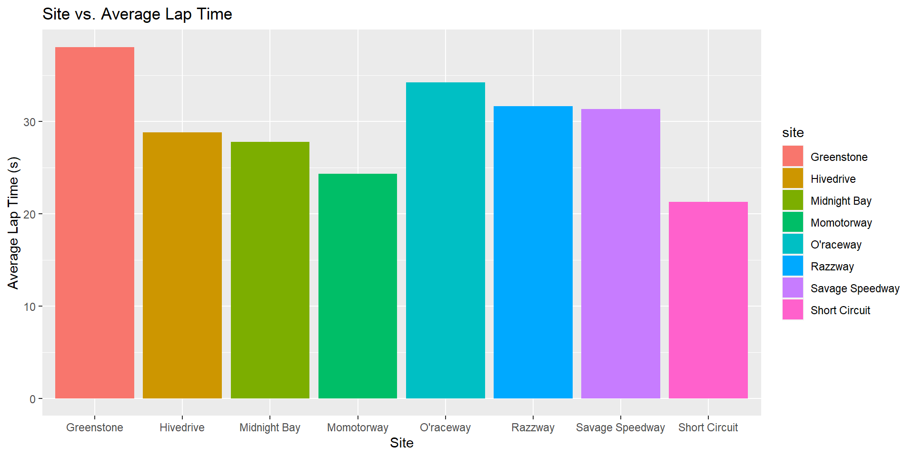 Maybe Greenstone, O’raceway, Razzway, and Savage Speedway do better on average? Remember, average lap time is measure in seconds, so with the range being 20s, that is a pretty big difference.
Plotting avg_time_lap by marble name to see if the owner/marble itself makes a difference
marble_name_plot <- marble_name_df %>%
ggplot(aes(x=marble_name, y=avg_time_lap, fill=marble_name)) +
geom_bar(stat = "identity") +
xlab("Marble Name") +
ylab("Average Lap Time (s)") +
theme(axis.text=element_text(size=10)) +
ggtitle("Marble Name vs. Average Lap Time") +
theme(axis.text.x = element_text(angle = 90))
plot(marble_name_plot)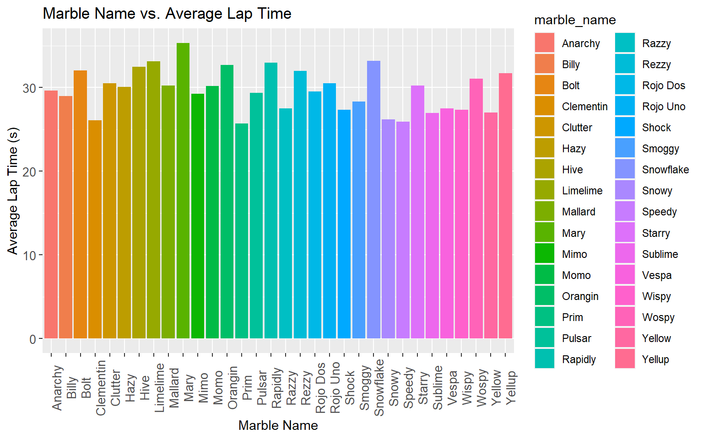 Also seems like some marbles tend to perform better.
Plotting avg_time_lap by team name to see if certain teams were just more successful than others
team_name_plot <- team_name_df %>%
ggplot(aes(x=team_name, y=avg_time_lap, fill=team_name)) +
geom_bar(stat = "identity") +
xlab("Team") +
ylab("Average Lap Time (s)") +
theme(axis.text=element_text(size=10)) +
ggtitle("Team vs. Average Lap Time") +
theme(axis.text.x = element_text(angle = 90))
plot(team_name_plot)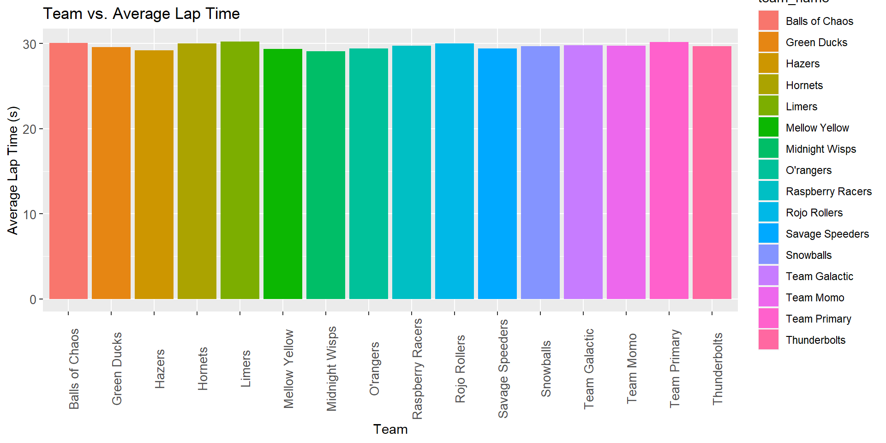
Interesting! Does not seem like one team performs better than another.
Plotting avg_time_lap by track length and number of laps to see if the physical layout of a track enhanced marble performance.
#Track Length Plot
track_length_plot <- clean_df %>%
ggplot(aes(x=track_length_m, y=avg_time_lap)) +
geom_point() +
geom_smooth(method = "lm", se=TRUE, fill="orange", color="red")+
xlab("track length") +
ylab("Average Lap Time (s)") +
theme(axis.text=element_text(size=10)) +
ggtitle("Track length vs. Average Lap Time")
plot(track_length_plot)## `geom_smooth()` using formula 'y ~ x'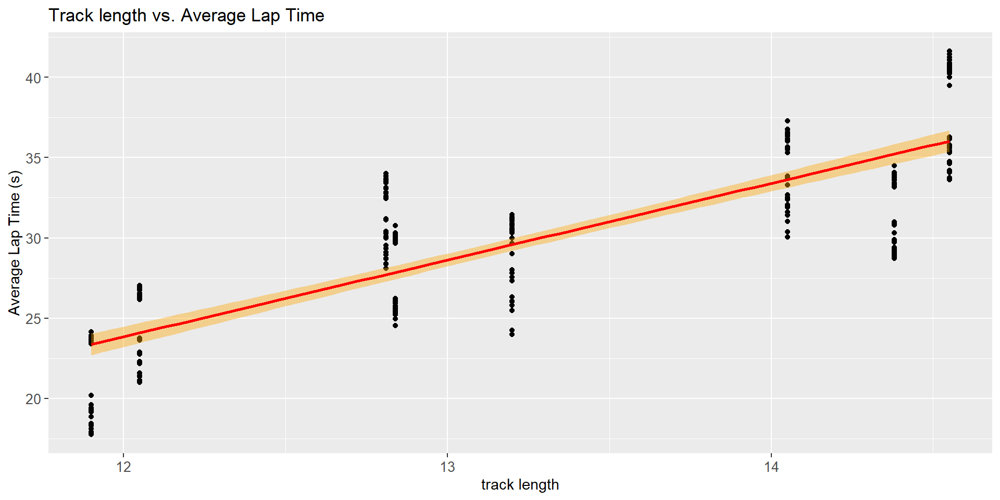
#Number of Laps Plot
laps_plot <- clean_df %>%
ggplot(aes(x=number_laps, y=avg_time_lap)) +
geom_point() +
geom_smooth(method = "lm", se=TRUE, fill="orange", color="red")+
xlab("Number of Laps in Race") +
ylab("Average Lap Time (s)") +
theme(axis.text=element_text(size=10)) +
ggtitle("Number of Laps vs. Average Lap Time")
plot(laps_plot)## `geom_smooth()` using formula 'y ~ x'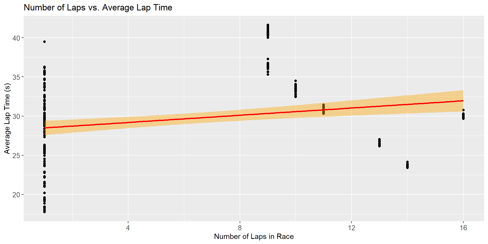
As one would expect, the longer the track length, the larger average race time. However, number of laps does not seem to have a relationship between average lap time.
Hypothesis and Outcome of Interest
Based on the exploration above, I would like to use average lap time as the outcome variable in an effort to assess how different track and marble characteristics predict marble race performance. To the effect, I hypothesize that the best predictors of average marble lap time race performance will be track ID and number of laps. This is because some tracks may be graded and constructed differently, allowing for differential performance between just the tracks. Additionally, I hypothesize that because the main propelling force is gravity, and the acceleration of gravity is constant, the more laps are included in the average lap time measurement, the slower a marble’s average lap speed will be. This is because to only other forces applied to the marble other than gravity actually act to slow the marble down, which will integrate by distance traveled.
Train/Test Splitting and Additional Data Cleaning
Train/Test Splitting:
Split clean2_df into a training data set and a test data set by a proportion of 75% train to 25% test . The training data is used to fit a model and the test data is to assess how good of a fit the data is.
# Split 3/4 of the data into training data
data_split <- initial_split(clean_df, prop = 3/4)
# Make new data frames for training and test data
train_data <- training(data_split)
test_data <- testing(data_split)Machine Learning Models
First, set a seed: This sets a random number generator with initial (pseudo)random values set as “123”. We will need a series of random numbers created for our machine learning analysis.
set.seed(123)Train Data: Average Lap Time Null Model
5-fold cross validation, 5 times repeated for train data: Here we are setting a cross-validation to measure how the results of our machine learning models will generalize to an independent data set. As such, the folds created will be be 5 random sub-samples of the train data set to test the validity of our models within the train data set. The 5x5 structure is arbitrary.
fold <- vfold_cv(train_data, v = 5, repeats = 5, strata = avg_time_lap)Creating the recipe for Average Lap Time vs all predictors
ATL.recipe <-
recipe(avg_time_lap ~ ., data = train_data) %>%
step_dummy(all_nominal(), -all_outcomes()) %>%
step_zv(all_predictors()) %>%
step_normalize(all_predictors())
ATL.recipe## Recipe
##
## Inputs:
##
## role #variables
## outcome 1
## predictor 5
##
## Operations:
##
## Dummy variables from all_nominal(), -all_outcomes()
## Zero variance filter on all_predictors()
## Centering and scaling for all_predictors()Setting linear regression model to assess relationship between average lap time and all other predictor variables.
lm_mod <- linear_reg() %>% set_engine("lm") %>% set_mode("regression")However, first we need to create our null model to test against.
Null Model:
Creates null model recipe. When we call this term, it will indicate in our workflow that average lap time will be predicted by a value of 1 (NULL).
Null_recipe_lm_train <- recipe(avg_time_lap ~ 1, data = train_data)Creating the Workflow: this creates a set workflow for running a null linear regression model with Average Lap Time as the outcome.
null_wf <- workflow() %>% add_model(lm_mod) %>% add_recipe(Null_recipe_lm_train)Here, I am going to fit the null model created in the above workflow to the folds made from the train data set.
null_train_lm <- fit_resamples(null_wf, resamples = fold)## ! Fold1, Repeat1: internal: A correlation computation is required, but `estimate` is const...## ! Fold2, Repeat1: internal: A correlation computation is required, but `estimate` is const...## ! Fold3, Repeat1: internal: A correlation computation is required, but `estimate` is const...## ! Fold4, Repeat1: internal: A correlation computation is required, but `estimate` is const...## ! Fold5, Repeat1: internal: A correlation computation is required, but `estimate` is const...## ! Fold1, Repeat2: internal: A correlation computation is required, but `estimate` is const...## ! Fold2, Repeat2: internal: A correlation computation is required, but `estimate` is const...## ! Fold3, Repeat2: internal: A correlation computation is required, but `estimate` is const...## ! Fold4, Repeat2: internal: A correlation computation is required, but `estimate` is const...## ! Fold5, Repeat2: internal: A correlation computation is required, but `estimate` is const...## ! Fold1, Repeat3: internal: A correlation computation is required, but `estimate` is const...## ! Fold2, Repeat3: internal: A correlation computation is required, but `estimate` is const...## ! Fold3, Repeat3: internal: A correlation computation is required, but `estimate` is const...## ! Fold4, Repeat3: internal: A correlation computation is required, but `estimate` is const...## ! Fold5, Repeat3: internal: A correlation computation is required, but `estimate` is const...## ! Fold1, Repeat4: internal: A correlation computation is required, but `estimate` is const...## ! Fold2, Repeat4: internal: A correlation computation is required, but `estimate` is const...## ! Fold3, Repeat4: internal: A correlation computation is required, but `estimate` is const...## ! Fold4, Repeat4: internal: A correlation computation is required, but `estimate` is const...## ! Fold5, Repeat4: internal: A correlation computation is required, but `estimate` is const...## ! Fold1, Repeat5: internal: A correlation computation is required, but `estimate` is const...## ! Fold2, Repeat5: internal: A correlation computation is required, but `estimate` is const...## ! Fold3, Repeat5: internal: A correlation computation is required, but `estimate` is const...## ! Fold4, Repeat5: internal: A correlation computation is required, but `estimate` is const...## ! Fold5, Repeat5: internal: A correlation computation is required, but `estimate` is const...Calculate RMSE for the train data linear model.
Null_Train_Met <- collect_metrics(null_train_lm)
Null_Train_Met## # A tibble: 2 x 6
## .metric .estimator mean n std_err .config
## <chr> <chr> <dbl> <int> <dbl> <chr>
## 1 rmse standard 5.56 25 0.0790 Preprocessor1_Model1
## 2 rsq standard NaN 0 NA Preprocessor1_Model1_RMSE = 5.48, with a standard deviation of 0.062. This will serve as our check to test our models against latter on.
Model Tuning and Fitting
a) Fit a Tree Model b) Fit a LASSO Model c) Fit a Random Forest Model d) Fit a
a) Tree Model
Specifying The Model: Decision Tree
#Identifying hyperparameters we want to use.
tune_spec_dtree <-
decision_tree(
cost_complexity = tune(),
tree_depth = tune()
) %>%
set_engine("rpart") %>%
set_mode("regression")
tune_spec_dtree## Decision Tree Model Specification (regression)
##
## Main Arguments:
## cost_complexity = tune()
## tree_depth = tune()
##
## Computational engine: rpartTune Grid Specification: Decision Tree
#create a regular grid of values for using convenience functions for each hyperparameter.
tree_grid_dtree <-
dials::grid_regular(
cost_complexity(),
tree_depth(),
levels = 5)
tree_grid_dtree## # A tibble: 25 x 2
## cost_complexity tree_depth
## <dbl> <int>
## 1 0.0000000001 1
## 2 0.0000000178 1
## 3 0.00000316 1
## 4 0.000562 1
## 5 0.1 1
## 6 0.0000000001 4
## 7 0.0000000178 4
## 8 0.00000316 4
## 9 0.000562 4
## 10 0.1 4
## # ... with 15 more rowsCreating a Workflow: Decision Tree
dtree_wf <- workflow() %>%
add_model(tune_spec_dtree) %>%
add_recipe(ATL.recipe)Cross Validation with tunegrid(): Decision Tree
dtree_resample <-
dtree_wf %>%
tune_grid(
resamples = fold,
grid = tree_grid_dtree
)
dtree_resample %>%
collect_metrics()## # A tibble: 50 x 8
## cost_complexity tree_depth .metric .estimator mean n std_err .config
## <dbl> <int> <chr> <chr> <dbl> <int> <dbl> <chr>
## 1 0.0000000001 1 rmse standard 4.24 25 0.0601 Preprocess~
## 2 0.0000000001 1 rsq standard 0.431 25 0.0105 Preprocess~
## 3 0.0000000178 1 rmse standard 4.24 25 0.0601 Preprocess~
## 4 0.0000000178 1 rsq standard 0.431 25 0.0105 Preprocess~
## 5 0.00000316 1 rmse standard 4.24 25 0.0601 Preprocess~
## 6 0.00000316 1 rsq standard 0.431 25 0.0105 Preprocess~
## 7 0.000562 1 rmse standard 4.24 25 0.0601 Preprocess~
## 8 0.000562 1 rsq standard 0.431 25 0.0105 Preprocess~
## 9 0.1 1 rmse standard 4.24 25 0.0601 Preprocess~
## 10 0.1 1 rsq standard 0.431 25 0.0105 Preprocess~
## # ... with 40 more rowsPlot model performance using autoplot()
dtree_resample %>%
autoplot()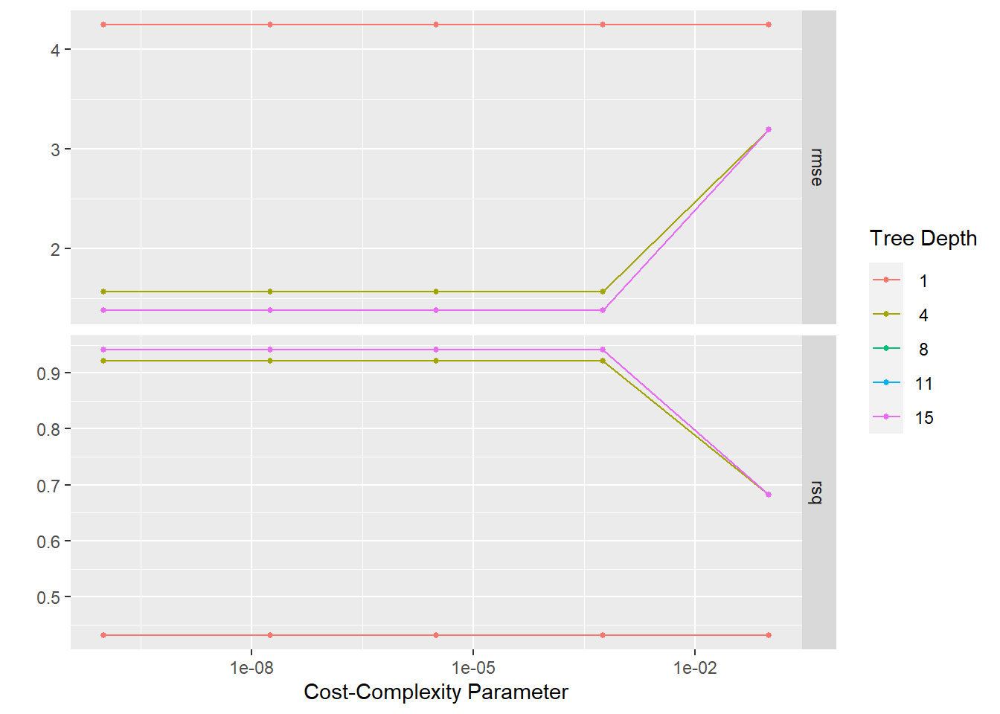
Showing and selecting best performing Models
#Showing best performing tree models
dtree_resample %>%
show_best(n=1)## Warning: No value of `metric` was given; metric 'rmse' will be used.## # A tibble: 1 x 8
## cost_complexity tree_depth .metric .estimator mean n std_err .config
## <dbl> <int> <chr> <chr> <dbl> <int> <dbl> <chr>
## 1 0.0000000001 8 rmse standard 1.38 25 0.0612 Preprocesso~#Selects best performing model
best_tree <- dtree_resample %>%
select_best()## Warning: No value of `metric` was given; metric 'rmse' will be used.This shows a tree with depth = 7 is the best performing models (RMSE = 1.33; STE = 0.040). This model performs much better than the null model.
Creating final fit based on best model permutation and plotting predicted values from that final fit model
dtree_final_wf <-
dtree_wf %>%
finalize_workflow(best_tree)
dtree_final_wf## == Workflow ====================================================================
## Preprocessor: Recipe
## Model: decision_tree()
##
## -- Preprocessor ----------------------------------------------------------------
## 3 Recipe Steps
##
## * step_dummy()
## * step_zv()
## * step_normalize()
##
## -- Model -----------------------------------------------------------------------
## Decision Tree Model Specification (regression)
##
## Main Arguments:
## cost_complexity = 1e-10
## tree_depth = 8
##
## Computational engine: rpart#Create workflow for fitting model to train_data2 predictions
dtree_final_fit <-
dtree_final_wf %>%
fit(train_data) Calculating residuals and ploting Actual vs. Predicted values
Calculating residuals manually.
dtree_residuals <- dtree_final_fit %>%
augment(train_data) %>% #use augment() to make predictions from train data
select(c(.pred, avg_time_lap)) %>%
mutate(.resid = avg_time_lap - .pred) #calculate residuals and make new row.
dtree_residuals## # A tibble: 189 x 3
## .pred avg_time_lap .resid
## <dbl> <dbl> <dbl>
## 1 30.1 30.1 -0.00727
## 2 26.8 29.6 2.80
## 3 33.2 33.1 -0.154
## 4 22.0 22.2 0.154
## 5 35.4 34.8 -0.666
## 6 29.7 31.0 1.30
## 7 23.8 23.9 0.113
## 8 26.7 26.4 -0.308
## 9 32.4 33.8 1.43
## 10 36.3 36.4 0.0600
## # ... with 179 more rowsmodel predictions from tuned model vs actual outcomes
dtree_pred_plot <- ggplot(dtree_residuals,
aes(x = avg_time_lap,
y = .pred)) +
geom_point() +
labs(title = "Predictions vs Actual: Decision Tree",
x = "Actual Average Time Lap",
y = "Average Time Lap Prediction")
dtree_pred_plot plot residuals vs predictions
plot residuals vs predictions
dtree_residual_plot <- ggplot(dtree_residuals,
aes(y = .resid,
x = .pred)) +
geom_point() +
labs(title = "Predictions vs Residuals: Decision Tree",
x = "Average Time Lap Prediction",
y = "Residuals")
plot(dtree_residual_plot) #view plot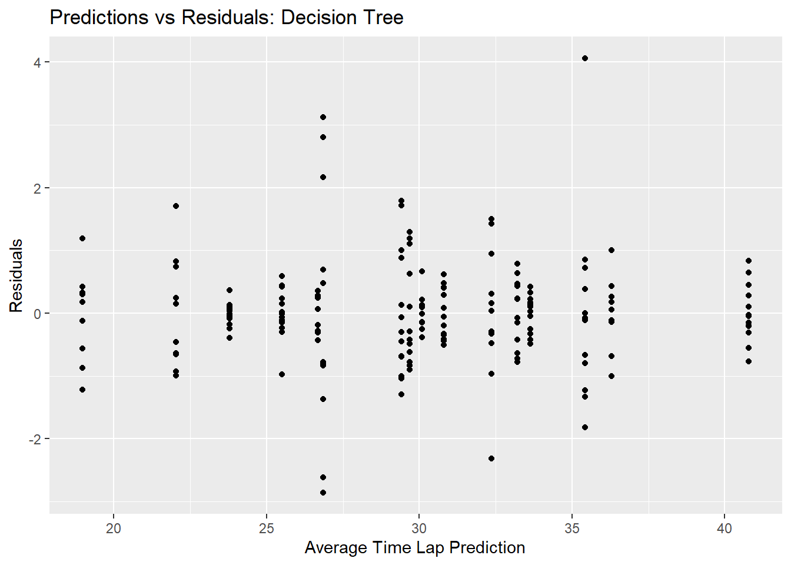
b) LASSO Model
Specifying The Model: LASSO
lasso_mod <-
linear_reg(penalty = tune(), mixture = 1) %>%
set_engine("glmnet")Creating a Workflow: LASSO
lasso_wf <- workflow() %>%
add_model(lasso_mod) %>%
add_recipe(ATL.recipe)Create Tuning Grid: LASSO
lasso_grid <- tibble(penalty = 10^seq(-3, 0, length.out = 30))Cross Validation with tune_grid(): LASSO
lasso_resample <-
lasso_wf %>%
tune_grid(resamples = fold,
grid = lasso_grid,
control = control_grid(verbose = FALSE, save_pred = TRUE),
metrics = metric_set(rmse))
lasso_resample %>%
collect_metrics()## # A tibble: 30 x 7
## penalty .metric .estimator mean n std_err .config
## <dbl> <chr> <chr> <dbl> <int> <dbl> <chr>
## 1 0.001 rmse standard 1.10 25 0.0195 Preprocessor1_Model01
## 2 0.00127 rmse standard 1.10 25 0.0195 Preprocessor1_Model02
## 3 0.00161 rmse standard 1.10 25 0.0195 Preprocessor1_Model03
## 4 0.00204 rmse standard 1.10 25 0.0195 Preprocessor1_Model04
## 5 0.00259 rmse standard 1.10 25 0.0195 Preprocessor1_Model05
## 6 0.00329 rmse standard 1.10 25 0.0196 Preprocessor1_Model06
## 7 0.00418 rmse standard 1.09 25 0.0196 Preprocessor1_Model07
## 8 0.00530 rmse standard 1.09 25 0.0196 Preprocessor1_Model08
## 9 0.00672 rmse standard 1.09 25 0.0196 Preprocessor1_Model09
## 10 0.00853 rmse standard 1.09 25 0.0197 Preprocessor1_Model10
## # ... with 20 more rowsPlot model performance using autoplot()
#Plot of actual train_data
lasso_resample %>%
autoplot()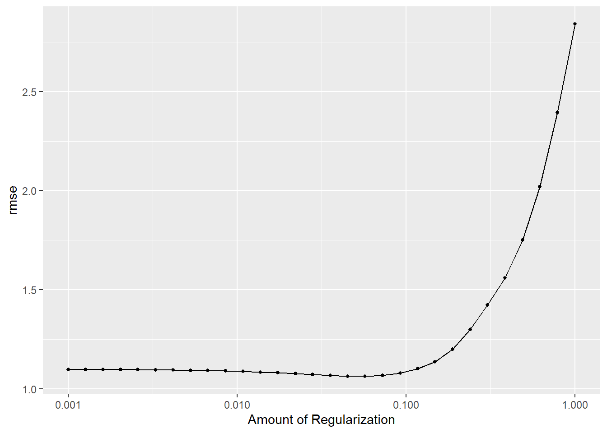
Showing and selecting best performing Models
#Showing best performing tree models
lasso_resample %>%
show_best()## # A tibble: 5 x 7
## penalty .metric .estimator mean n std_err .config
## <dbl> <chr> <chr> <dbl> <int> <dbl> <chr>
## 1 0.0574 rmse standard 1.06 25 0.0230 Preprocessor1_Model18
## 2 0.0452 rmse standard 1.06 25 0.0216 Preprocessor1_Model17
## 3 0.0356 rmse standard 1.07 25 0.0207 Preprocessor1_Model16
## 4 0.0728 rmse standard 1.07 25 0.0250 Preprocessor1_Model19
## 5 0.0281 rmse standard 1.07 25 0.0202 Preprocessor1_Model15#Selects best performing model
best_lasso <- lasso_resample %>%
select_best()This shows that model 18 is the best performing models (RMSE = 1.10; STE = 0.025). It performs better than the null model, indicating that it fits the data with some sort of relationship.
Creating final fit based on best model permutation and plotting predicted values from that final fit model
lasso_final_wf <-
lasso_wf %>%
finalize_workflow(best_lasso)
lasso_final_wf## == Workflow ====================================================================
## Preprocessor: Recipe
## Model: linear_reg()
##
## -- Preprocessor ----------------------------------------------------------------
## 3 Recipe Steps
##
## * step_dummy()
## * step_zv()
## * step_normalize()
##
## -- Model -----------------------------------------------------------------------
## Linear Regression Model Specification (regression)
##
## Main Arguments:
## penalty = 0.0573615251044868
## mixture = 1
##
## Computational engine: glmnet#Create workflow for fitting model to train_data2 predictions
lasso_final_fit <-
lasso_final_wf %>%
fit(train_data) Calculating residuals manually.
lasso_residuals <- lasso_final_fit %>%
augment(train_data) %>% #use augment() to make predictions from train data
select(c(.pred, avg_time_lap)) %>%
mutate(.resid = avg_time_lap - .pred) #calculate residuals and make new row.
lasso_residuals## # A tibble: 189 x 3
## .pred avg_time_lap .resid
## <dbl> <dbl> <dbl>
## 1 30.9 30.1 -0.796
## 2 27.3 29.6 2.32
## 3 32.9 33.1 0.152
## 4 21.9 22.2 0.291
## 5 35.8 34.8 -1.07
## 6 31.6 31.0 -0.650
## 7 24.0 23.9 -0.140
## 8 26.5 26.4 -0.175
## 9 33.1 33.8 0.715
## 10 36.0 36.4 0.370
## # ... with 179 more rowsmodel predictions from tuned model vs actual outcomes
lasso_pred_plot <- ggplot(lasso_residuals,
aes(x = avg_time_lap,
y = .pred)) +
geom_point() +
labs(title = "Predictions vs Actual: LASSO",
x = "Average Lap Time",
y = "Average Lap Time Prediction")
lasso_pred_plot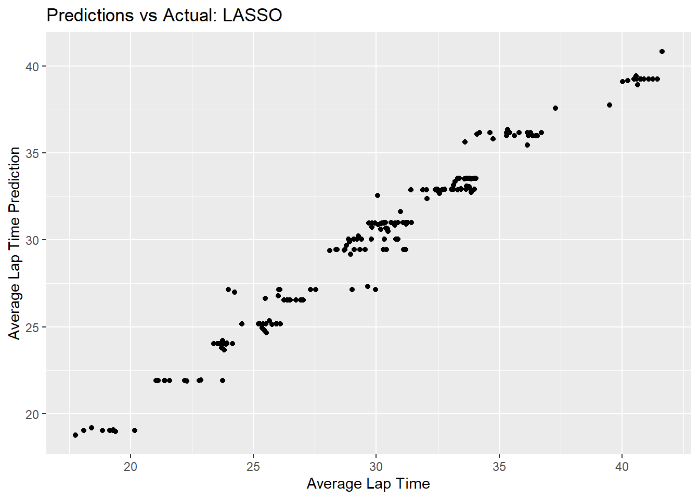 plot residuals vs predictions
lasso_residual_plot <- ggplot(lasso_residuals,
aes(y = .resid,
x = .pred)) +
geom_point() +
labs(title = "Predictions vs Residuals: LASSO",
x = "Average Lap Time Prediction",
y = "Residuals")
plot(lasso_residual_plot) #view plot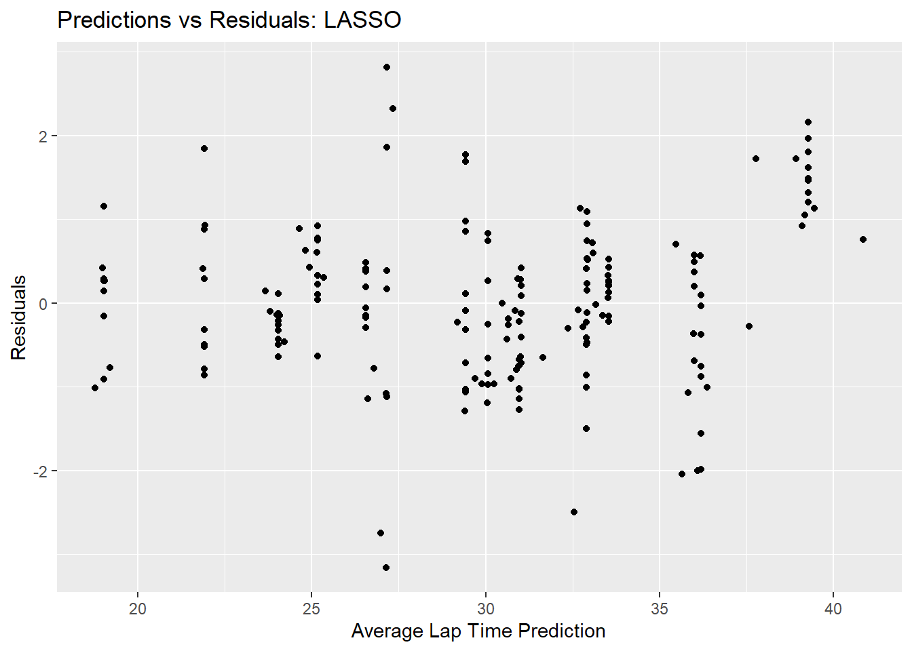
c) Random Forest
Create function to detect cores for Random Forest Model computation
cores <- parallel::detectCores()
cores## [1] 8Specifying The Model: Random Forest
rf_mod <-
rand_forest(mtry = tune(), min_n = tune(), trees = 1000) %>%
set_engine("ranger", num.threads = cores) %>%
set_mode("regression")Creating a Workflow: Random Forest
rf_wf <- workflow() %>%
add_model(rf_mod) %>%
add_recipe(ATL.recipe)Create Tuning Grid: Random Forest
rf_grid <- expand.grid(mtry = c(3, 4, 5, 6), min_n = c(40,50,60), trees = c(500,1000) )Cross Validation with tune_grid(): Random Forest
rf_resample <-
rf_wf %>%
tune_grid(fold,
grid = 25,
control = control_grid(save_pred = TRUE),
metrics = metric_set(rmse))## i Creating pre-processing data to finalize unknown parameter: mtryrf_resample %>%
collect_metrics()## # A tibble: 25 x 8
## mtry min_n .metric .estimator mean n std_err .config
## <int> <int> <chr> <chr> <dbl> <int> <dbl> <chr>
## 1 39 4 rmse standard 0.920 25 0.0363 Preprocessor1_Model01
## 2 8 17 rmse standard 1.79 25 0.0402 Preprocessor1_Model02
## 3 22 15 rmse standard 1.12 25 0.0216 Preprocessor1_Model03
## 4 2 13 rmse standard 3.84 25 0.0779 Preprocessor1_Model04
## 5 5 32 rmse standard 2.54 25 0.0576 Preprocessor1_Model05
## 6 12 40 rmse standard 1.94 25 0.0453 Preprocessor1_Model06
## 7 37 25 rmse standard 1.38 25 0.0215 Preprocessor1_Model07
## 8 52 13 rmse standard 0.937 25 0.0360 Preprocessor1_Model08
## 9 49 35 rmse standard 1.80 25 0.0278 Preprocessor1_Model09
## 10 10 10 rmse standard 1.43 25 0.0308 Preprocessor1_Model10
## # ... with 15 more rowsPlot model performance using autoplot()
#Plot of actual train_data2
rf_resample %>%
autoplot()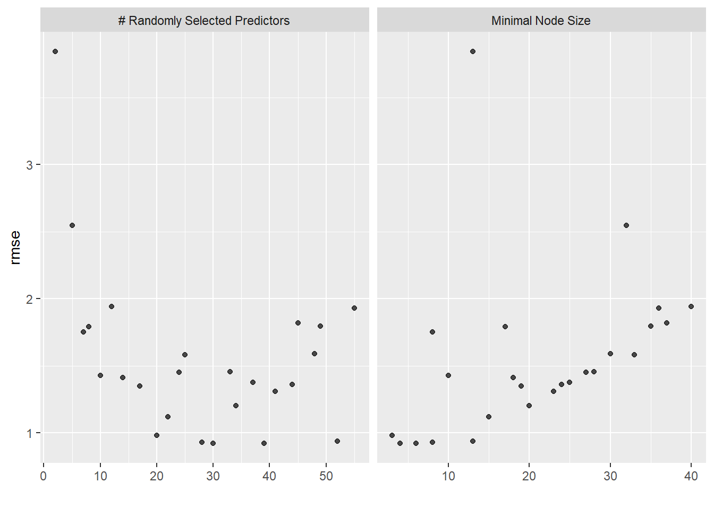
Showing and selecting best performing Models
#Showing best performing tree models
rf_resample %>%
show_best()## # A tibble: 5 x 8
## mtry min_n .metric .estimator mean n std_err .config
## <int> <int> <chr> <chr> <dbl> <int> <dbl> <chr>
## 1 30 6 rmse standard 0.919 25 0.0337 Preprocessor1_Model11
## 2 39 4 rmse standard 0.920 25 0.0363 Preprocessor1_Model01
## 3 28 8 rmse standard 0.930 25 0.0330 Preprocessor1_Model18
## 4 52 13 rmse standard 0.937 25 0.0360 Preprocessor1_Model08
## 5 20 3 rmse standard 0.981 25 0.0284 Preprocessor1_Model17#Selects best performing model
best_rf <- rf_resample %>%
select_best()This shows that “mtry 52” is the best performing model (RMSE = 0.94; STE = 0.032). This performs better than the null model, indicating the model fits the data well.
Creating final fit based on best model permutation and plotting predicted values from that final fit model
rf_final_wf <-
rf_wf %>%
finalize_workflow(best_rf)
rf_final_wf## == Workflow ====================================================================
## Preprocessor: Recipe
## Model: rand_forest()
##
## -- Preprocessor ----------------------------------------------------------------
## 3 Recipe Steps
##
## * step_dummy()
## * step_zv()
## * step_normalize()
##
## -- Model -----------------------------------------------------------------------
## Random Forest Model Specification (regression)
##
## Main Arguments:
## mtry = 30
## trees = 1000
## min_n = 6
##
## Engine-Specific Arguments:
## num.threads = cores
##
## Computational engine: ranger#Create workflow for fitting model to train_data predictions
rf_final_fit <-
rf_final_wf %>%
fit(train_data) Calculating residuals manually.
rf_residuals <- rf_final_fit %>%
augment(train_data) %>% #use augment() to make predictions from train data
select(c(.pred, avg_time_lap)) %>%
mutate(.resid = avg_time_lap - .pred) #calculate residuals and make new row.
rf_residuals## # A tibble: 189 x 3
## .pred avg_time_lap .resid
## <dbl> <dbl> <dbl>
## 1 30.1 30.1 0.00264
## 2 28.4 29.6 1.24
## 3 33.2 33.1 -0.101
## 4 22.1 22.2 0.0948
## 5 35.1 34.8 -0.354
## 6 31.0 31.0 0.0205
## 7 23.9 23.9 -0.00944
## 8 26.5 26.4 -0.101
## 9 33.1 33.8 0.683
## 10 36.3 36.4 0.0533
## # ... with 179 more rowsmodel predictions from tuned model vs actual outcomes
rf_pred_plot <- ggplot(rf_residuals,
aes(x = avg_time_lap,
y = .pred)) +
geom_point() +
labs(title = "Predictions vs Actual: Random Forest",
x = "Average Lap Time Actual",
y = "Average Lap Time Prediction")
rf_pred_plot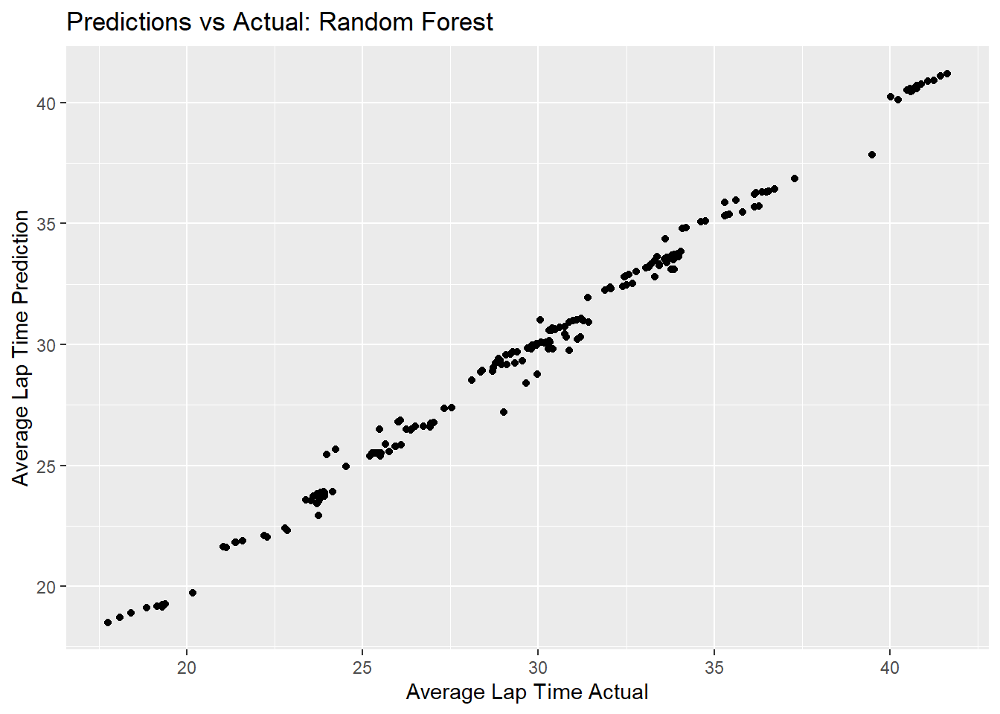 plot residuals vs predictions
rf_residual_plot <- ggplot(rf_residuals,
aes(y = .resid,
x = .pred)) +
geom_point() +
labs(title = "Predictions vs Residuals: Random Forest",
x = "Average Lap Time Prediction",
y = "Residuals")
plot(rf_residual_plot) #view plot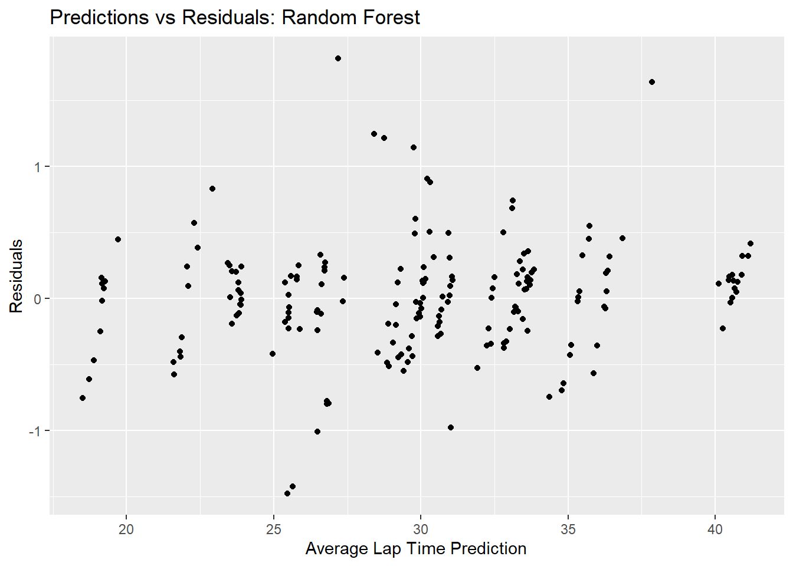
d) Ensemble Model
Based on the models run above, I tend to like the LASSO model because of the penalty and removal associated with poorly predicting variables. However, the random forest model had the best RMSE value when compared to the null model for Average Lap Time. Therefore, I want to build an ensemble model with LASSO and Random Forest to see if the combination fits the data any better.
Note, that the ensemble model already has recipes, workflows, etc. for LASSO and Random Forest Models created above. All that needs to be done is combine them.
edit resampling definition for both random forest and LASSO to include proper control arguments
#random forest
rf_resample2 <-
rf_wf %>%
tune_grid(fold,
grid = 25,
control = control_stack_grid(),
metrics = metric_set(rmse))## i Creating pre-processing data to finalize unknown parameter: mtryrf_resample2 %>%
collect_metrics()## # A tibble: 25 x 8
## mtry min_n .metric .estimator mean n std_err .config
## <int> <int> <chr> <chr> <dbl> <int> <dbl> <chr>
## 1 47 39 rmse standard 1.91 25 0.0297 Preprocessor1_Model01
## 2 17 17 rmse standard 1.28 25 0.0231 Preprocessor1_Model02
## 3 46 8 rmse standard 0.912 25 0.0380 Preprocessor1_Model03
## 4 53 30 rmse standard 1.66 25 0.0238 Preprocessor1_Model04
## 5 29 23 rmse standard 1.33 25 0.0220 Preprocessor1_Model05
## 6 26 33 rmse standard 1.59 25 0.0297 Preprocessor1_Model06
## 7 41 25 rmse standard 1.38 25 0.0200 Preprocessor1_Model07
## 8 14 5 rmse standard 1.12 25 0.0271 Preprocessor1_Model08
## 9 21 9 rmse standard 0.991 25 0.0278 Preprocessor1_Model09
## 10 10 36 rmse standard 1.97 25 0.0464 Preprocessor1_Model10
## # ... with 15 more rows#LASSO
lasso_resample2 <-
lasso_wf %>%
tune_grid(resamples = fold,
grid = lasso_grid,
control = control_stack_grid(),
metrics = metric_set(rmse))
lasso_resample2 %>%
collect_metrics()## # A tibble: 30 x 7
## penalty .metric .estimator mean n std_err .config
## <dbl> <chr> <chr> <dbl> <int> <dbl> <chr>
## 1 0.001 rmse standard 1.10 25 0.0195 Preprocessor1_Model01
## 2 0.00127 rmse standard 1.10 25 0.0195 Preprocessor1_Model02
## 3 0.00161 rmse standard 1.10 25 0.0195 Preprocessor1_Model03
## 4 0.00204 rmse standard 1.10 25 0.0195 Preprocessor1_Model04
## 5 0.00259 rmse standard 1.10 25 0.0195 Preprocessor1_Model05
## 6 0.00329 rmse standard 1.10 25 0.0196 Preprocessor1_Model06
## 7 0.00418 rmse standard 1.09 25 0.0196 Preprocessor1_Model07
## 8 0.00530 rmse standard 1.09 25 0.0196 Preprocessor1_Model08
## 9 0.00672 rmse standard 1.09 25 0.0196 Preprocessor1_Model09
## 10 0.00853 rmse standard 1.09 25 0.0197 Preprocessor1_Model10
## # ... with 20 more rowsStacking data with stack package
clean2_df_stack <-
stacks() %>%
add_candidates(lasso_resample2) %>%
add_candidates(rf_resample2)## Warning: Predictions from 1 candidate were identical to those from existing
## * candidates and were removed from the data stack.clean2_df_stack## # A data stack with 2 model definitions and 54 candidate members:
## # lasso_resample2: 29 model configurations
## # rf_resample2: 25 model configurations
## # Outcome: avg_time_lap (numeric)Before fitting our stack to our data, it is usually good to use the blend_prediction() function to assess how the model output will be combined in the final prediction. This is done by fitting a LASSO model on the data stack, predicting the true assessment set outcome using the predictions from each of the candidate members.
ensemble_mod <-
clean2_df_stack %>%
blend_predictions()
autoplot(ensemble_mod)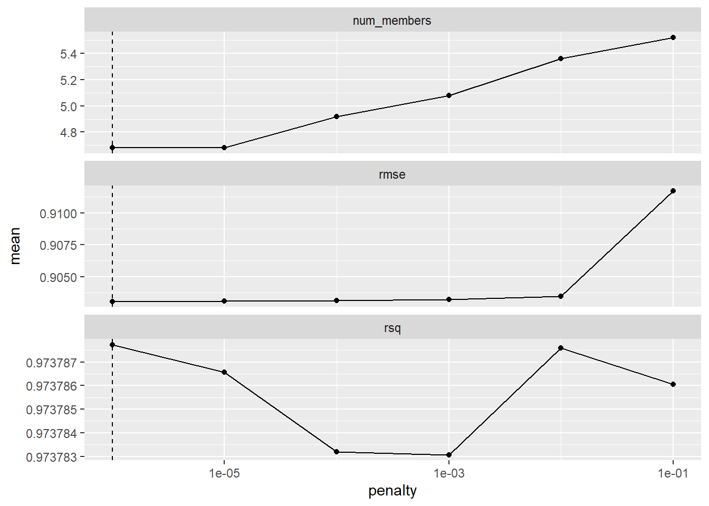
Fitting the stack for our LASSO/RF Ensemble model to our train data using the blended predication model.
ensemble_mod <-
ensemble_mod %>%
fit_members()
ensemble_mod## -- A stacked ensemble model -------------------------------------##
## Out of 54 possible candidate members, the ensemble retained 3.
## Penalty: 1e-06.
## Mixture: 1.##
## The 3 highest weighted members are:## # A tibble: 3 x 3
## member type weight
## <chr> <chr> <dbl>
## 1 rf_resample2_1_03 rand_forest 0.663
## 2 lasso_resample2_1_01 linear_reg 0.253
## 3 rf_resample2_1_17 rand_forest 0.0935#using collect_parameters function to see which individual model was used to assign which stacking coefficient.
collect_parameters(ensemble_mod, "lasso_resample2")## # A tibble: 30 x 3
## member penalty coef
## <chr> <dbl> <dbl>
## 1 lasso_resample2_1_01 0.001 0.253
## 2 lasso_resample2_1_02 0.00127 NA
## 3 lasso_resample2_1_03 0.00161 0
## 4 lasso_resample2_1_04 0.00204 0
## 5 lasso_resample2_1_05 0.00259 0
## 6 lasso_resample2_1_06 0.00329 0
## 7 lasso_resample2_1_07 0.00418 0
## 8 lasso_resample2_1_08 0.00530 0
## 9 lasso_resample2_1_09 0.00672 0
## 10 lasso_resample2_1_10 0.00853 0
## # ... with 20 more rowscollect_parameters(ensemble_mod, "rf_resample2")## # A tibble: 25 x 4
## member mtry min_n coef
## <chr> <int> <int> <dbl>
## 1 rf_resample2_1_01 47 39 0
## 2 rf_resample2_1_02 17 17 0
## 3 rf_resample2_1_03 46 8 0.663
## 4 rf_resample2_1_04 53 30 0
## 5 rf_resample2_1_05 29 23 0
## 6 rf_resample2_1_06 26 33 0
## 7 rf_resample2_1_07 41 25 0
## 8 rf_resample2_1_08 14 5 0
## 9 rf_resample2_1_09 21 9 0
## 10 rf_resample2_1_10 10 36 0
## # ... with 15 more rowsThis shows that rf_resamble2-1-03 is the best performing model (weight = 0.488), which is a random forest model. However, the summary reported that only 4 models total out of 52 total possibilities. This seems like a red flag to me, possibly indicating that I don’t have enough data. Therefore, I will most likely not use it.
Model Evaluation
Based on the comparison of RMSE scores between the four models and the null model, analysis of fit made by each model, and prediction fitting, I would like to use the LASSO model on the test data. The Random Forest had the best over all RMSE, but the LASSO model most likely picked a combination of variables that best predicted the outcome by dropping variables with penalties </= 0. As stated above, the Ensemble model is ruled out because there is likely not enough data to make the Ensemble model perform well.
Test Data Modeling
LASSO Model
Specifying The Model: LASSO
lasso_mod <-
linear_reg(penalty = tune(), mixture = 1) %>%
set_engine("glmnet")Creating new recipe for LASSO modeling of test data
ATL.recipe2 <-
recipe(avg_time_lap ~ ., data = test_data) %>%
step_dummy(all_nominal(), -all_outcomes()) %>%
step_zv(all_predictors()) %>%
step_normalize(all_predictors())
ATL.recipe2## Recipe
##
## Inputs:
##
## role #variables
## outcome 1
## predictor 5
##
## Operations:
##
## Dummy variables from all_nominal(), -all_outcomes()
## Zero variance filter on all_predictors()
## Centering and scaling for all_predictors()Creating a Workflow: LASSO
lasso_wf2 <- workflow() %>%
add_model(lasso_mod) %>%
add_recipe(ATL.recipe2)Create Tuning Grid: LASSO
lasso_grid <- tibble(penalty = 10^seq(-3, 0, length.out = 30))Cross Validation with tune_grid(): LASSO
lasso_resample2 <-
lasso_wf2 %>%
tune_grid(resamples = fold,
grid = lasso_grid,
control = control_grid(verbose = FALSE, save_pred = TRUE),
metrics = metric_set(rmse))
lasso_resample2 %>%
collect_metrics()## # A tibble: 30 x 7
## penalty .metric .estimator mean n std_err .config
## <dbl> <chr> <chr> <dbl> <int> <dbl> <chr>
## 1 0.001 rmse standard 1.10 25 0.0195 Preprocessor1_Model01
## 2 0.00127 rmse standard 1.10 25 0.0195 Preprocessor1_Model02
## 3 0.00161 rmse standard 1.10 25 0.0195 Preprocessor1_Model03
## 4 0.00204 rmse standard 1.10 25 0.0195 Preprocessor1_Model04
## 5 0.00259 rmse standard 1.10 25 0.0195 Preprocessor1_Model05
## 6 0.00329 rmse standard 1.10 25 0.0196 Preprocessor1_Model06
## 7 0.00418 rmse standard 1.09 25 0.0196 Preprocessor1_Model07
## 8 0.00530 rmse standard 1.09 25 0.0196 Preprocessor1_Model08
## 9 0.00672 rmse standard 1.09 25 0.0196 Preprocessor1_Model09
## 10 0.00853 rmse standard 1.09 25 0.0197 Preprocessor1_Model10
## # ... with 20 more rowsPlot model performance using autoplot()
#Plot of actual train_data
lasso_resample2 %>%
autoplot()Showing and selecting best performing Models
#Showing best performing tree models
lasso_resample2 %>%
show_best()## # A tibble: 5 x 7
## penalty .metric .estimator mean n std_err .config
## <dbl> <chr> <chr> <dbl> <int> <dbl> <chr>
## 1 0.0574 rmse standard 1.06 25 0.0230 Preprocessor1_Model18
## 2 0.0452 rmse standard 1.06 25 0.0216 Preprocessor1_Model17
## 3 0.0356 rmse standard 1.07 25 0.0207 Preprocessor1_Model16
## 4 0.0728 rmse standard 1.07 25 0.0250 Preprocessor1_Model19
## 5 0.0281 rmse standard 1.07 25 0.0202 Preprocessor1_Model15#Selects best performing model
best_lasso2 <- lasso_resample2 %>%
select_best()This shows that model 16 is the best performing models (RMSE = 1.035; STE = 0.024). It performs better than the null model, indicating that it fits the data with some sort of relationship.
Creating final fit based on best model permutation and plotting predicted values from that final fit model
lasso_final_wf2 <-
lasso_wf2 %>%
finalize_workflow(best_lasso2)
lasso_final_wf2## == Workflow ====================================================================
## Preprocessor: Recipe
## Model: linear_reg()
##
## -- Preprocessor ----------------------------------------------------------------
## 3 Recipe Steps
##
## * step_dummy()
## * step_zv()
## * step_normalize()
##
## -- Model -----------------------------------------------------------------------
## Linear Regression Model Specification (regression)
##
## Main Arguments:
## penalty = 0.0573615251044868
## mixture = 1
##
## Computational engine: glmnet#Create workflow for fitting model to test_data predictions
lasso_final_fit2 <-
lasso_final_wf2 %>%
fit(test_data) Calculating residuals manually.
lasso_residuals2 <- lasso_final_fit2 %>%
augment(test_data) %>% #use augment() to make predictions from train data
select(c(.pred, avg_time_lap)) %>%
mutate(.resid = avg_time_lap - .pred) #calculate residuals and make new row.
lasso_residuals2## # A tibble: 64 x 3
## .pred avg_time_lap .resid
## <dbl> <dbl> <dbl>
## 1 28.8 28.7 -0.120
## 2 29.8 30.0 0.173
## 3 29.8 30.1 0.273
## 4 32.4 32.4 0.0827
## 5 33.0 32.8 -0.186
## 6 33.0 33.5 0.514
## 7 33.3 33.7 0.409
## 8 31.9 30.4 -1.50
## 9 32.8 31.0 -1.75
## 10 32.5 31.6 -0.885
## # ... with 54 more rowsmodel predictions from tuned model vs actual outcomes
lasso_pred_plot2 <- ggplot(lasso_residuals2,
aes(x = avg_time_lap,
y = .pred)) +
geom_point() +
labs(title = "Predictions vs Actual: LASSO Test",
x = "Average Lap Time",
y = "Average Lap Time Prediction")
lasso_pred_plot2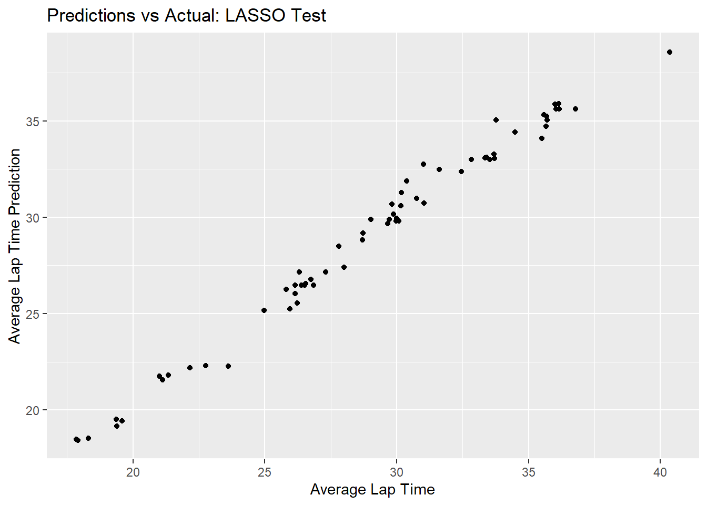
plot residuals vs predictions
lasso_residual_plot2 <- ggplot(lasso_residuals2,
aes(y = .resid,
x = .pred)) +
geom_point() +
labs(title = "Predictions vs Residuals: LASSO Test",
x = "Average Lap Time Prediction",
y = "Residuals")
plot(lasso_residual_plot2) #view plot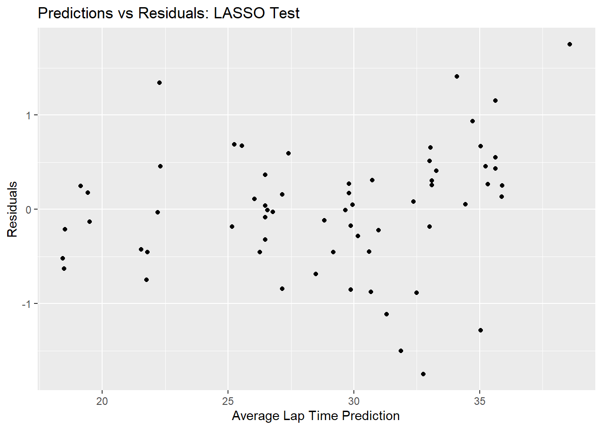
Discussion
If you haven’t already repressed it, think back to June 2020. The COVID-19 pandemic is in full swing, lockdown orders are still in place in areas where the virus is spreading at very high rates. You are terrified of interacting with people and one by one you favorite tv shows, movie franchises, and sports are disappearing. While some of us decided to throw our lot in to hiking and DIY crafts, it seems others found excitement in a new contactless sport: marble racing. In this tidy tuesday, I will be taking on the role of an aspiring pandemic ESPN analyst to cover the the Jelle’s Marble Run competition. My goal will be to use the 2020 season’s data to assess that makes a winning marble. This will ultimately be done through the use of Machine Learning models.
During this exercise, I loaded raw data for the Jelle’s Marble Run 2020 season. BAsed on observations made in the loaded data, I cleaned the data down to essentially six variables of interest: site, marble name, team name, track length, number of laps, and average lap time. I chose average lap time as my outcome in an effort to try and see if we could predict marble performance based on the other five predictors.
Exploration of the data basically showed that there was some sort of trend between average lap time and all variables except the team that marble belongs to number of laps in race. Given this information, I included all variables into four machine learning models to see if we could make a complex model to predict marble performance.
Results of the four models are as follows:
Tree Model shows a tree with depth = 7 is the best performing models (RMSE = 1.33; STE = 0.040). This model performs much better than the null model. Lasso shows that model 18 is the best performing models (RMSE = 1.10; STE = 0.025). It performs better than the null model, indicating that it fits the data with some sort of relationship. Random Forest shows that “mtry 52” is the best performing model (RMSE = 0.94; STE = 0.032). This performs better than the null model, indicating the model fits the data well. Ensemble model shows that rf_resamble2-1-03 is the best performing model (weight = 0.488), which is a random forest model. However, the summary reported that only 4 models total out of 52 total possibilities. This seems like a red flag to me, possibly indicating that I don’t have enough data. Therefore, I will most likely not use it.
At this point, I concluded that based on the comparison of RMSE scores between the four models and the null model, analysis of fit made by each model, and prediction fitting, I would like to use the LASSO model on the test data. The Random Forest had the best over all RMSE, but the LASSO model most likely picked a combination of variables that best predicted the outcome by dropping variables with penalties </= 0. As stated above, the Ensemble model is ruled out because there is likely not enough data to make the Ensemble model perform well.
Finally, I re-ran a LASSO model, this time with the test data. Results indicated that model 16 was the best performing model (RMSE = 1.035; STE = 0.024). It performs better than the null model, indicating that it fits the data with some sort of relationship. The RMSE and standard deviation for this LASSO model for test data is consistent with that of the train data, showing that predictions with good fit can be made and reproduced using the LASSO model.